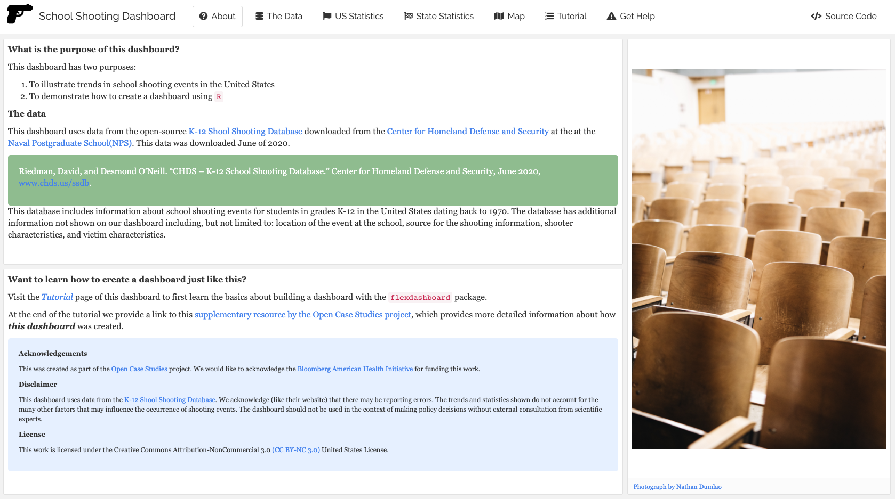
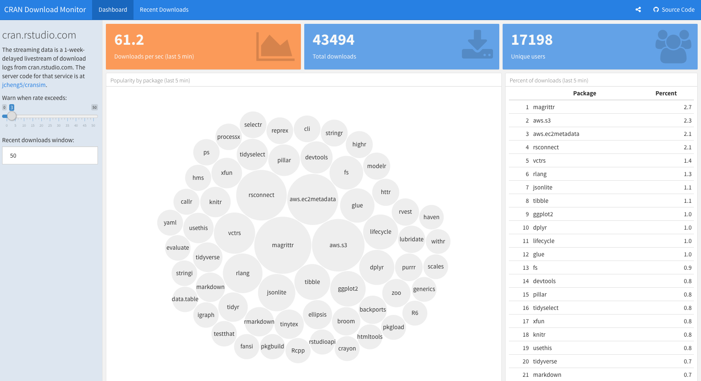

<!DOCTYPE html>

<html>

<head>

<meta charset="utf-8" />
<meta name="generator" content="pandoc" />
<meta http-equiv="X-UA-Compatible" content="IE=EDGE" />


<title> School Shootings in the United States</title>

<html>

<head>
<!-- Global site tag (gtag.js) - Google Analytics -->
<script async src="https://www.googletagmanager.com/gtag/js?id=G-SEKLK099WC"></script>
<script>
  window.dataLayer = window.dataLayer || [];
  function gtag(){dataLayer.push(arguments);}
  gtag('js', new Date());

  gtag('config', 'G-SEKLK099WC');
</script>
</head>

<body>


</body>
</html>
<!-- HEAD_CONTENT -->

<style type="text/css">
  code{white-space: pre-wrap;}
  span.smallcaps{font-variant: small-caps;}
  span.underline{text-decoration: underline;}
  div.column{display: inline-block; vertical-align: top; width: 50%;}
  div.hanging-indent{margin-left: 1.5em; text-indent: -1.5em;}
  ul.task-list{list-style: none;}
    </style>


<style type="text/css">
  code {
    white-space: pre;
  }
  .sourceCode {
    overflow: visible;
  }
</style>
<style type="text/css" data-origin="pandoc">
pre > code.sourceCode { white-space: pre; position: relative; }
pre > code.sourceCode > span { display: inline-block; line-height: 1.25; }
pre > code.sourceCode > span:empty { height: 1.2em; }
.sourceCode { overflow: visible; }
code.sourceCode > span { color: inherit; text-decoration: inherit; }
div.sourceCode { margin: 1em 0; }
pre.sourceCode { margin: 0; }
@media screen {
div.sourceCode { overflow: auto; }
}
@media print {
pre > code.sourceCode { white-space: pre-wrap; }
pre > code.sourceCode > span { text-indent: -5em; padding-left: 5em; }
}
pre.numberSource code
  { counter-reset: source-line 0; }
pre.numberSource code > span
  { position: relative; left: -4em; counter-increment: source-line; }
pre.numberSource code > span > a:first-child::before
  { content: counter(source-line);
    position: relative; left: -1em; text-align: right; vertical-align: baseline;
    border: none; display: inline-block;
    -webkit-touch-callout: none; -webkit-user-select: none;
    -khtml-user-select: none; -moz-user-select: none;
    -ms-user-select: none; user-select: none;
    padding: 0 4px; width: 4em;
    color: #aaaaaa;
  }
pre.numberSource { margin-left: 3em; border-left: 1px solid #aaaaaa;  padding-left: 4px; }
div.sourceCode
  {  background-color: #f8f8f8; }
@media screen {
pre > code.sourceCode > span > a:first-child::before { text-decoration: underline; }
}
code span.al { color: #ef2929; } /* Alert */
code span.an { color: #8f5902; font-weight: bold; font-style: italic; } /* Annotation */
code span.at { color: #c4a000; } /* Attribute */
code span.bn { color: #0000cf; } /* BaseN */
code span.cf { color: #204a87; font-weight: bold; } /* ControlFlow */
code span.ch { color: #4e9a06; } /* Char */
code span.cn { color: #000000; } /* Constant */
code span.co { color: #8f5902; font-style: italic; } /* Comment */
code span.cv { color: #8f5902; font-weight: bold; font-style: italic; } /* CommentVar */
code span.do { color: #8f5902; font-weight: bold; font-style: italic; } /* Documentation */
code span.dt { color: #204a87; } /* DataType */
code span.dv { color: #0000cf; } /* DecVal */
code span.er { color: #a40000; font-weight: bold; } /* Error */
code span.ex { } /* Extension */
code span.fl { color: #0000cf; } /* Float */
code span.fu { color: #000000; } /* Function */
code span.im { } /* Import */
code span.in { color: #8f5902; font-weight: bold; font-style: italic; } /* Information */
code span.kw { color: #204a87; font-weight: bold; } /* Keyword */
code span.op { color: #ce5c00; font-weight: bold; } /* Operator */
code span.ot { color: #8f5902; } /* Other */
code span.pp { color: #8f5902; font-style: italic; } /* Preprocessor */
code span.sc { color: #000000; } /* SpecialChar */
code span.ss { color: #4e9a06; } /* SpecialString */
code span.st { color: #4e9a06; } /* String */
code span.va { color: #000000; } /* Variable */
code span.vs { color: #4e9a06; } /* VerbatimString */
code span.wa { color: #8f5902; font-weight: bold; font-style: italic; } /* Warning */

</style>
<script>
// apply pandoc div.sourceCode style to pre.sourceCode instead
(function() {
  var sheets = document.styleSheets;
  for (var i = 0; i < sheets.length; i++) {
    if (sheets[i].ownerNode.dataset["origin"] !== "pandoc") continue;
    try { var rules = sheets[i].cssRules; } catch (e) { continue; }
    for (var j = 0; j < rules.length; j++) {
      var rule = rules[j];
      // check if there is a div.sourceCode rule
      if (rule.type !== rule.STYLE_RULE || rule.selectorText !== "div.sourceCode") continue;
      var style = rule.style.cssText;
      // check if color or background-color is set
      if (rule.style.color === '' && rule.style.backgroundColor === '') continue;
      // replace div.sourceCode by a pre.sourceCode rule
      sheets[i].deleteRule(j);
      sheets[i].insertRule('pre.sourceCode{' + style + '}', j);
    }
  }
})();
</script>


<style type="text/css">
#rmd-source-code {
  display: none;
}
</style>


<link rel="stylesheet" href="www/style.css" type="text/css" />


<style type = "text/css">
.main-container {
  max-width: 940px;
  margin-left: auto;
  margin-right: auto;
}
img {
  max-width:100%;
}
.tabbed-pane {
  padding-top: 12px;
}
.html-widget {
  margin-bottom: 20px;
}
button.code-folding-btn:focus {
  outline: none;
}
summary {
  display: list-item;
}
pre code {
  padding: 0;
}
</style>


<!-- tabsets -->

<style type="text/css">
.tabset-dropdown > .nav-tabs {
  display: inline-table;
  max-height: 500px;
  min-height: 44px;
  overflow-y: auto;
  border: 1px solid #ddd;
  border-radius: 4px;
}

.tabset-dropdown > .nav-tabs > li.active:before {
  content: "";
  font-family: 'Glyphicons Halflings';
  display: inline-block;
  padding: 10px;
  border-right: 1px solid #ddd;
}

.tabset-dropdown > .nav-tabs.nav-tabs-open > li.active:before {
  content: "&#xe258;";
  border: none;
}

.tabset-dropdown > .nav-tabs.nav-tabs-open:before {
  content: "";
  font-family: 'Glyphicons Halflings';
  display: inline-block;
  padding: 10px;
  border-right: 1px solid #ddd;
}

.tabset-dropdown > .nav-tabs > li.active {
  display: block;
}

.tabset-dropdown > .nav-tabs > li > a,
.tabset-dropdown > .nav-tabs > li > a:focus,
.tabset-dropdown > .nav-tabs > li > a:hover {
  border: none;
  display: inline-block;
  border-radius: 4px;
  background-color: transparent;
}

.tabset-dropdown > .nav-tabs.nav-tabs-open > li {
  display: block;
  float: none;
}

.tabset-dropdown > .nav-tabs > li {
  display: none;
}
</style>

<!-- code folding -->
<style type="text/css">
.code-folding-btn { margin-bottom: 4px; }
</style>


<style type="text/css">

#section-TOC {
  margin: 25px 0px 20px 0px;
}
@media (max-width: 768px) {
#section-TOC {
  position: relative;
  width: 100%;
}
}

@media print {
.toc-content {
  /* see https://github.com/w3c/csswg-drafts/issues/4434 */
  float: right;
}
}

.toc-content {
  padding-left: 30px;
  padding-right: 40px;
}

div.main-container {
  max-width: 1200px;
}

div.tocify {
  width: 20%;
  max-width: 260px;
  max-height: 85%;
}

@media (min-width: 768px) and (max-width: 991px) {
  div.tocify {
    width: 25%;
  }
}

@media (max-width: 767px) {
  div.tocify {
    width: 100%;
    max-width: none;
  }
}

.tocify ul, .tocify li {
  line-height: 20px;
}

.tocify-subheader .tocify-item {
  font-size: 0.90em;
}

.tocify .list-group-item {
  border-radius: 0px;
}


</style>


</head>

<body>


<div class="container-fluid main-container">


<!-- setup 3col/9col grid for toc_float and main content  -->
<div class="row">
<div class="col-xs-12 col-sm-4 col-md-3">
<div id="section-TOC" class="tocify">
</div>
</div>

<div class="toc-content col-xs-12 col-sm-8 col-md-9">


<div id="section-header">

<div class="btn-group pull-right float-right">
<button type="button" class="btn btn-default btn-xs btn-secondary btn-sm dropdown-toggle" data-toggle="dropdown" aria-haspopup="true" aria-expanded="false"><span>Code</span> <span class="caret"></span></button>
<ul class="dropdown-menu dropdown-menu-right" style="min-width: 50px;">
<li><a id="rmd-download-source" href="#">Download Rmd</a></li>
</ul>
</div>


<h1 class="title toc-ignore"><p> School Shootings in the United States</p></h1>

</div>


<!-- Open all links in new tab-->
<p><base target="_blank"/></p>
<div align="left" id="google_translate_element",></div>
<script type="text/javascript" src='//translate.google.com/translate_a/element.js?cb=googleTranslateElementInit'></script>
<script type="text/javascript">
function googleTranslateElementInit() {
  new google.translate.TranslateElement({pageLanguage: 'en'}, 'google_translate_element');
}
</script>
<div id="section-section" class="section level4 outline">
<h4 class="outline"></h4>
<p><a href="https://rsconnect.biostat.jhsph.edu/ocs-bp-school-shootings-dashboard/" target="_blank"></a></p>
</div>
<div id="section-section-1" class="section level4">
<h4></h4>
<p>The link to the dashboard described in this case study is <a href="https://rsconnect.biostat.jhsph.edu/ocs-bp-school-shootings-dashboard/">here</a>.</p>
<p>To access the GitHub Repository for this case study see here: <a href="https://github.com/opencasestudies/ocs-bp-school-shootings-dashboard/" class="uri">https://github.com/opencasestudies/ocs-bp-school-shootings-dashboard/</a>.</p>
<p>To access the GitHub repository for this case study see here: <a href="https://github.com//opencasestudies/ocs-bp-youth-disconnection" class="uri">https://github.com//opencasestudies/ocs-bp-youth-disconnection</a>.</p>
<p>You may also access and download the data using our <code>OCSdata</code> package. To learn more about this package including examples, see this <a href="https://github.com/opencasestudies/OCSdata">link</a>. Here is how you would install this package:</p>
<div class="sourceCode" id="section-cb1"><pre class="sourceCode r"><code class="sourceCode r"><span id="section-cb1-1"><a href="#section-cb1-1" aria-hidden="true" tabindex="-1"></a><span class="fu">install.packages</span>(<span class="st">&quot;OCSdata&quot;</span>)</span></code></pre></div>
<p>This case study is part of a series of public health case studies for the <a href="https://americanhealth.jhu.edu/open-case-studies">Bloomberg American Health Initiative</a>.</p>
<p>For users or instructors who only wish to look at the basics of how to create a dashboard in R with the <code>flexdashboard</code> package, please see the [<strong>Dashboard Basics</strong>] Section.</p>
</div>
<div id="section-section-2" class="section level4 disclaimer_block">
<h4 class="disclaimer_block"></h4>
<p><strong>Disclaimer</strong>: The purpose of the <a href="https://opencasestudies.github.io" target="_blank">Open Case Studies</a> project is <strong>to demonstrate the use of various data science methods, tools, and software in the context of messy, real-world data</strong>. A given case study does not cover all aspects of the research process, is not claiming to be the most appropriate way to analyze a given data set, and should not be used in the context of making policy decisions without external consultation from scientific experts.</p>
</div>
<div id="section-section-3" class="section level4">
<h4></h4>
</div>
<div id="section-section-4" class="section level4 license_block">
<h4 class="license_block"></h4>
<p>This work is licensed under the Creative Commons Attribution-NonCommercial 3.0 <a href="https://creativecommons.org/licenses/by-nc/3.0/us/" target="_blank">(CC BY-NC 3.0)</a> United States License.</p>
</div>
<div id="section-section-5" class="section level4">
<h4></h4>
</div>
<div id="section-section-6" class="section level4 reference_block">
<h4 class="reference_block"></h4>
<p>To cite this case study please use:</p>
<p>Wright, Carrie and Ontiveros, Michael and Jager, Leah and Taub, Margaret and Hicks, Stephanie. (2020). <a href="https://github.com//opencasestudies/ocs-bp-school-shootings-dashboard">https://github.com//opencasestudies/ocs-bp-school-shootings-dashboard</a>. Open Case Studies: School Shootings in the United States (Version v1.0.0).</p>
</div>
<div id="section-section-7" class="section level4">
<h4></h4>
<p>Please help us by filling out our survey.</p>
<div style="display: flex; justify-content: center;">
<iframe src="https://docs.google.com/forms/d/e/1FAIpQLSfpN4FN3KELqBNEgf2Atpi7Wy7Nqy2beSkFQINL7Y5sAMV5_w/viewform?embedded=true" width="1200" height="700" frameborder="0" marginheight="0" marginwidth="0">
Loading…
</iframe>
</div>
</div>
<div id="section-motivation" class="section level1">
<h1><strong>Motivation</strong></h1>
<hr />
<p>This case study is motivated by this <a href="https://link.springer.com/content/pdf/10.1007/s11920-012-0331-6.pdf">article</a>:</p>
<div id="section-section-8" class="section level4 reference_block">
<h4 class="reference_block"></h4>
<p>Flannery, D. J., Modzeleski, W. &amp; Kretschmar, J. M. Violence and School Shootings. Curr Psychiatry Rep 15, 331 (2013). DOI: <a href="https://doi.org/10.1007/s11920-012-0331-6">10.1007/s11920-012-0331-6</a></p>
</div>
<div id="section-section-9" class="section level4">
<h4></h4>
<p>The article explores characteristics of school shootings and violence in schools and discusses why these events may occur, as well as their impact on the communities in which they occur.</p>
<p>The article also states that the shooters are most commonly white males, but that many previous studies of shooter characteristics could not identify any particular “profile” of shooters.</p>
<blockquote>
<p>“To date, studies of school shootings have concluded that no consistent and reliable profile of school shooters exist…”</p>
</blockquote>
<p>However previous studies note some commonalities such as:</p>
<blockquote>
<p>“…most shooters were depressed, had experienced some significant loss, felt persecuted or bullied by others, and had prior difficulty coping or had previously tried suicide.”</p>
</blockquote>
<p>Therefore in our dashboard we will examine how often a shooter was male or attempted or committed suicide during an event.</p>
<p></p>
<p><span>Photo by <a href="https://unsplash.com/@mrthetrain?utm_source=unsplash&amp;utm_medium=referral&amp;utm_content=creditCopyText">Joshua Hoehne</a> on <a href="https://unsplash.com/s/photos/high-school?utm_source=unsplash&amp;utm_medium=referral&amp;utm_content=creditCopyText">Unsplash</a></span></p>
<blockquote>
<p>"School shootings are not all the same and may require different approaches to prevention and treatment, especially with respect to identifying risk factors at the individual, school or community levels, and particularly with regard to examining the role that mental health issues may play to increase risk for perpetration.</p>
</blockquote>
<blockquote>
<p>The field <strong>needs to know more</strong> about shooting incidents that are averted, those that result in injury but not death and about the characteristics of the more common occurrence of single homicide school shootings."</p>
</blockquote>
<p></p>
<p><span>Photo by <a href="https://unsplash.com/@dre0316?utm_source=unsplash&amp;utm_medium=referral&amp;utm_content=creditCopyText">Andre Hunter</a> on <a href="https://unsplash.com/s/photos/high-school?utm_source=unsplash&amp;utm_medium=referral&amp;utm_content=creditCopyText">Unsplash</a></span></p>
<p>Given this need for more research to better understand why these events occur and how they could be averted, in this case study we will demonstrate how to create a resource for others to more easily and interactively access data about school shootings. To do so we will create what is called a <a href="https://en.wikipedia.org/wiki/Dashboard_(business)">dashboard</a>, which is a website that displays a report for a database. Dashboards summarize the data in a database and typically allow for users to interact with the data in some way.</p>
<p><a href="https://jjallaire.shinyapps.io/shiny-crandash/#dashboardl">Here</a> you can see an example of a dashboard created in R about downloads of packages on <a href="https://cran.r-project.org/">CRAN</a>.</p>
<p>On the website the tabs and plots are interactive. The above dashboard allows for users to get to know the data in a simple and quick way.</p>
<p>The data about package downloads is succinctly summarized in an impactful manner.</p>
<p><a href="https://jjallaire.shinyapps.io/shiny-crandash/#dashboardl" target="_blank"></a></p>
<p>We can quickly get a sense that the <code>magrittr</code> package is among the top most widely downloaded packages on CRAN.</p>
<div id="section-source" class="section level5">
<h5><a href="https://jjallaire.shinyapps.io/shiny-crandash/#dashboardl">[source]</a></h5>
<p>Now let’s learn how to create a dashboard with our data of interest.</p>
</div>
</div>
</div>
<div id="section-main-questions" class="section level1">
<h1><strong>Main Questions</strong></h1>
<hr />
<div id="section-section-10" class="section level4 main_question_block">
<h4 class="main_question_block"></h4>
<p><b><u> Our main questions: </u></b></p>
<ol style="list-style-type: decimal">
<li><p>What has been the yearly rate of school shootings and where in the country have they occurred in the last 50 years (from January 1970 to June 2020)?</p></li>
<li><p>How many individuals are typically killed in a school shooting?</p></li>
<li><p>What were the characteristics of the shooters: How often was a shooter male? How often did a shooter attempt or commit suicide?</p></li>
</ol>
</div>
<div id="section-section-11" class="section level4">
<h4></h4>
</div>
</div>
<div id="section-learning-objectives" class="section level1">
<h1><strong>Learning Objectives</strong></h1>
<hr />
<p>In this case study, we will demonstrate how to create a <a href="https://en.wikipedia.org/wiki/Dashboard_(business)">dashboard</a>, which is a website that displays a report about a database. In doing so, we will focus on packages and functions from the <a href="https://www.tidyverse.org/" target="_blank"><code>tidyverse</code></a> for the data wrangling and visualization sections. The tidyverse is a library of packages created by RStudio. While some students may be familiar with previous R programming packages, these packages make data science in R more human-readable and intuitive.</p>
<p></p>
<p>The skills, methods, and concepts that students will be familiar with by the end of this case study are:</p>
<p><u><strong>Data Science Learning Objectives:</strong></u></p>
<ol style="list-style-type: decimal">
<li>Importing text from a Google Sheets document (<code>googlesheets4</code>)<br />
</li>
<li>Converting date formats (<code>lubridate</code>)<br />
</li>
<li>Geocoding data (<code>ggmap</code>) and creating a jitter for geocoded data on a map (<code>SF</code>)</li>
<li>How to reshape data by pivoting between “long” and “wide” formats and drop rows with <code>NA</code> values (<code>tidyr</code>)<br />
</li>
<li>How to create data visualizations with <code>ggplot2</code></li>
<li>An introduction to the basics of R Markdown</li>
<li>How to create an interactive table (<code>DT</code>)<br />
</li>
<li>How to create a map (<code>leaflet</code>)<br />
</li>
<li>How to create an interactive dashboard with <code>flexdashboard</code> and <code>shiny</code></li>
</ol>
<p><u><strong>Statistical Learning Objectives:</strong></u></p>
<ol style="list-style-type: decimal">
<li>Calculating percentages for data with missing values<br />
</li>
<li>Creating <a href="https://en.wikipedia.org/wiki/Summary_statistics">summary statistics</a></li>
</ol>
<p><em>Note: statistics is a part of data science</em></p>
<hr />
<p>We will begin by loading the packages that we will need:</p>
<div class="sourceCode" id="section-cb2"><pre class="sourceCode r"><code class="sourceCode r"><span id="section-cb2-1"><a href="#section-cb2-1" aria-hidden="true" tabindex="-1"></a><span class="fu">library</span>(here)</span>
<span id="section-cb2-2"><a href="#section-cb2-2" aria-hidden="true" tabindex="-1"></a><span class="fu">library</span>(readr)</span>
<span id="section-cb2-3"><a href="#section-cb2-3" aria-hidden="true" tabindex="-1"></a><span class="fu">library</span>(googlesheets4)</span>
<span id="section-cb2-4"><a href="#section-cb2-4" aria-hidden="true" tabindex="-1"></a><span class="fu">library</span>(tibble)</span>
<span id="section-cb2-5"><a href="#section-cb2-5" aria-hidden="true" tabindex="-1"></a><span class="fu">library</span>(dplyr)</span>
<span id="section-cb2-6"><a href="#section-cb2-6" aria-hidden="true" tabindex="-1"></a><span class="fu">library</span>(stringr)</span>
<span id="section-cb2-7"><a href="#section-cb2-7" aria-hidden="true" tabindex="-1"></a><span class="fu">library</span>(magrittr)</span>
<span id="section-cb2-8"><a href="#section-cb2-8" aria-hidden="true" tabindex="-1"></a><span class="fu">library</span>(tidyr)</span>
<span id="section-cb2-9"><a href="#section-cb2-9" aria-hidden="true" tabindex="-1"></a><span class="fu">library</span>(ggmap)</span>
<span id="section-cb2-10"><a href="#section-cb2-10" aria-hidden="true" tabindex="-1"></a><span class="fu">library</span>(sf)</span>
<span id="section-cb2-11"><a href="#section-cb2-11" aria-hidden="true" tabindex="-1"></a><span class="fu">library</span>(lubridate)</span>
<span id="section-cb2-12"><a href="#section-cb2-12" aria-hidden="true" tabindex="-1"></a><span class="fu">library</span>(DT)</span>
<span id="section-cb2-13"><a href="#section-cb2-13" aria-hidden="true" tabindex="-1"></a><span class="fu">library</span>(htmltools)</span>
<span id="section-cb2-14"><a href="#section-cb2-14" aria-hidden="true" tabindex="-1"></a><span class="fu">library</span>(ggplot2)</span>
<span id="section-cb2-15"><a href="#section-cb2-15" aria-hidden="true" tabindex="-1"></a><span class="fu">library</span>(forcats)</span>
<span id="section-cb2-16"><a href="#section-cb2-16" aria-hidden="true" tabindex="-1"></a><span class="fu">library</span>(ggforce)</span>
<span id="section-cb2-17"><a href="#section-cb2-17" aria-hidden="true" tabindex="-1"></a><span class="fu">library</span>(waffle)</span>
<span id="section-cb2-18"><a href="#section-cb2-18" aria-hidden="true" tabindex="-1"></a><span class="fu">library</span>(poliscidata)</span>
<span id="section-cb2-19"><a href="#section-cb2-19" aria-hidden="true" tabindex="-1"></a><span class="fu">library</span>(flexdashboard)</span>
<span id="section-cb2-20"><a href="#section-cb2-20" aria-hidden="true" tabindex="-1"></a><span class="fu">library</span>(shiny)</span>
<span id="section-cb2-21"><a href="#section-cb2-21" aria-hidden="true" tabindex="-1"></a><span class="fu">library</span>(leaflet)</span>
<span id="section-cb2-22"><a href="#section-cb2-22" aria-hidden="true" tabindex="-1"></a><span class="fu">library</span>(maps)</span>
<span id="section-cb2-23"><a href="#section-cb2-23" aria-hidden="true" tabindex="-1"></a><span class="fu">library</span>(vembedr)</span>
<span id="section-cb2-24"><a href="#section-cb2-24" aria-hidden="true" tabindex="-1"></a><span class="fu">library</span>(OCSdata)</span></code></pre></div>
<p>Note <a href="https://www.tidyverse.org/packages/">some of these packages</a> are part of the <code>tidyverse</code> and can be loaded together like so:</p>
<div class="sourceCode" id="section-cb3"><pre class="sourceCode r"><code class="sourceCode r"><span id="section-cb3-1"><a href="#section-cb3-1" aria-hidden="true" tabindex="-1"></a><span class="fu">library</span>(tidyverse)</span></code></pre></div>
<p><u><strong>Packages used in this case study:</strong> </u></p>
<table>
<colgroup>
<col width="43%" />
<col width="56%" />
</colgroup>
<thead>
<tr class="header">
<th>Package</th>
<th>Use in this case study</th>
</tr>
</thead>
<tbody>
<tr class="odd">
<td><a href="https://github.com/jennybc/here_here" target="_blank">here</a></td>
<td>to easily load and save data</td>
</tr>
<tr class="even">
<td><a href="https://readr.tidyverse.org/">readr</a></td>
<td>to import the data as a csv file</td>
</tr>
<tr class="odd">
<td><a href="https://googlesheets4.tidyverse.org/">googlesheets4</a></td>
<td>to import directly from Google Sheets</td>
</tr>
<tr class="even">
<td><a href="https://tibble.tidyverse.org/">tibble</a></td>
<td>to create tibbles (the tidyverse version of dataframes)</td>
</tr>
<tr class="odd">
<td><a href="https://dplyr.tidyverse.org/" target="_blank">dplyr</a></td>
<td>to filter, subset, join, add rows to, and modify the data</td>
</tr>
<tr class="even">
<td><a href="https://stringr.tidyverse.org/" target="_blank">stringr</a></td>
<td>to manipulate character strings within the data (collapsing strings together, replace values, and detect values)</td>
</tr>
<tr class="odd">
<td><a href="https://magrittr.tidyverse.org/" target="_blank">magrittr</a></td>
<td>to pipe sequential commands</td>
</tr>
<tr class="even">
<td><a href="https://tidyr.tidyverse.org/" target="_blank">tidyr</a></td>
<td>to change the shape or format of tibbles to wide and long, to drop rows with <code>NA</code> values, and to see the last few columns of a tibble</td>
</tr>
<tr class="odd">
<td><a href="https://cran.r-project.org/web/packages/ggmap/ggmap.pdf">ggmap</a></td>
<td>to geocode the data (which means get the latitude and longitude values)</td>
</tr>
<tr class="even">
<td><a href="https://r-spatial.github.io/sf/">sf</a></td>
<td>to modify the geocoded data so that overlapping points did not overlap</td>
</tr>
<tr class="odd">
<td><a href="https://lubridate.tidyverse.org/">lubridate</a></td>
<td>to work with the data-time data</td>
</tr>
<tr class="even">
<td><a href="https://rstudio.github.io/DT/">DT</a></td>
<td>to create the interactive table</td>
</tr>
<tr class="odd">
<td><a href="https://www.rdocumentation.org/packages/htmltools/versions/0.5.0">htmltools</a></td>
<td>to add a caption to our interactive table</td>
</tr>
<tr class="even">
<td><a href="https://ggplot2.tidyverse.org/" target="_blank">ggplot2</a></td>
<td>to create plots</td>
</tr>
<tr class="odd">
<td><a href="https://cran.r-project.org/web/packages/ggforce/ggforce.pdf">ggforce</a></td>
<td>to create a plot zoom</td>
</tr>
<tr class="even">
<td><a href="https://forcats.tidyverse.org/" target="_blank">forcats</a></td>
<td>to reorder factor for plot</td>
</tr>
<tr class="odd">
<td><a href="https://github.com/hrbrmstr/waffle">waffle</a></td>
<td>to make waffle proportion plots</td>
</tr>
<tr class="even">
<td><a href="https://cran.r-project.org/web/packages/poliscidata/poliscidata.pdf">poliscidata</a></td>
<td>to get population values for the states</td>
</tr>
<tr class="odd">
<td><a href="https://rmarkdown.rstudio.com/flexdashboard/">flexdashboard</a></td>
<td>to create the dashboard</td>
</tr>
<tr class="even">
<td><a href="https://shiny.rstudio.com/" target="_blank">shiny</a></td>
<td>to allow our dashboard to be interactive</td>
</tr>
<tr class="odd">
<td><a href="https://rstudio.github.io/leaflet/shiny.html">leaflet</a></td>
<td>to implement the <a href="http://leafletjs.com/">leaflet</a> (a JavaScript library for maps) to create the map for our dashboard</td>
</tr>
<tr class="even">
<td><a href="https://cran.r-project.org/web/packages/maps/maps.pdf">maps</a></td>
<td>to create the simple leaflet map example</td>
</tr>
<tr class="odd">
<td><a href="https://github.com/ijlyttle/vembedr">vembedr</a></td>
<td>to include a video in our case study</td>
</tr>
<tr class="even">
<td><a href="https://github.com/opencasestudies/OCSdata">OCSdata</a></td>
<td>to access and download cOCS data files</td>
</tr>
</tbody>
</table>
<p>The first time we use a function, we will use the <code>::</code> to indicate which package we are using. Unless we have overlapping function names, this is not necessary, but we will include it here to be informative about where the functions we will use come from.</p>
<div id="section-deaths-per-shooting" class="section level2">
<h2><strong>Deaths per Shooting</strong></h2>
<hr />
<p>Next, we will make a plot of the number of deaths per school shooting based on the <code>Killed (includes shooter)</code> variable.</p>
<div id="section-section-12" class="section level4 recall_code_question_block">
<h4 class="recall_code_question_block"></h4>
<p><b><u> Question Opportunity </u></b></p>
<p>See if you can come up with the code for the plot.</p>
</div>
<div id="section-section-13" class="section level4">
<h4></h4>
<div class="tutorial-exercise" data-label="dav_code1" data-completion="1" data-diagnostics="1" data-startover="1" data-lines="0">
<pre class="text"><code>deaths_per_event &lt;-
  shooting_data %&gt;%

per_shooting_plot &lt;- deaths_per_event %&gt;%</code></pre>
<script type="application/json" data-ui-opts="1">{"engine":"r","has_checker":false,"caption":"<span data-i18n=\"text.enginecap\" data-i18n-opts=\"{&quot;engine&quot;:&quot;R&quot;}\">R Code<\/span>"}</script>
</div>
<div class="tutorial-exercise-support" data-label="dav_code1-hint-1" data-completion="1" data-diagnostics="1" data-startover="1" data-lines="0">
<pre class="text"><code>deaths_per_event &lt;-
  shooting_data %&gt;%
  group_by(`Killed (includes shooter)`) %&gt;%
  count() %&gt;%
  ungroup()

per_shooting_plot &lt;- deaths_per_event %&gt;%</code></pre>
</div>
<div class="tutorial-exercise-support" data-label="dav_code1-hint-2" data-completion="1" data-diagnostics="1" data-startover="1" data-lines="0">
<pre class="text"><code>deaths_per_event &lt;-
  shooting_data %&gt;%
  group_by(`Killed (includes shooter)`) %&gt;%
  count() %&gt;%
  ungroup()

per_shooting_plot &lt;- deaths_per_event %&gt;%
  ggplot(aes(y = `Killed (includes shooter)`, x = n)) +
    geom_col(fill = &quot;black&quot;) +</code></pre>
</div>
<div class="tutorial-exercise-support" data-label="dav_code1-solution" data-completion="1" data-diagnostics="1" data-startover="1" data-lines="0">
<pre class="text"><code>deaths_per_event &lt;-
  shooting_data %&gt;%
  group_by(`Killed (includes shooter)`) %&gt;%
  count() %&gt;%
  ungroup()

per_shooting_plot &lt;- deaths_per_event %&gt;%
  ggplot(aes(y = `Killed (includes shooter)`, x = n)) +
    geom_col(fill = &quot;black&quot;) +
    theme_minimal() +
    labs(title = &quot;Deaths per School Shooting&quot;,
         subtitle = &quot;United States&quot;,
         x = &quot;School Shootings&quot;,
         y = &quot;&quot;)</code></pre>
</div>
<hr />
</div>
<div id="section-section-14" class="section level4 think_question_block">
<h4 class="think_question_block"></h4>
<p><b><u> Question Opportunity </u></b></p>
<p>Now try to perform variations of these calculations to calculate other statistics for our dashboard, such as the percentage of the shooters that were male or the percentage of events where a single handgun was used, (hint the <code>Firearm Type</code> value will be <code>Handgun</code>).</p>
<hr />
<p><strong>Shooter Was Male</strong></p>
<div id="section-section-15" class="section level5 exercise_block">
<h5 class="exercise_block"></h5>
<p>Write some code that will calculate the percentage of shooters that were male as well as the percentage of school shootings that report gender.</p>
<p><em>Note: replace the underscores(“_”) with your code with one character per “_”. Click “Submit Answer” to check your answer. </em></p>
<div class="tutorial-exercise" data-label="dav_exercise1" data-completion="1" data-diagnostics="1" data-startover="1" data-lines="0">
<pre class="text"><code># step 1
gender &lt;- paste(as.character(round(100 * (sum(
    case_when(pull(_____________, `______________`) == &quot;____&quot; ~ TRUE,
                                                        TRUE ~ FALSE),
                                      na.rm = TRUE)
    /
      sum(pull(_____________, `______________`)&gt;=_, na.rm = TRUE)),
    1)), &quot;%&quot;)
# step 2
reporting_male &lt;- (sum(pull(_____________, `______________`)&gt;=_, na.rm = TRUE)/
              length(pull(_____________, `______________`)))*100
reporting_male &lt;- round(reporting_male, 1)

gender
reporting_male</code></pre>
<script type="application/json" data-ui-opts="1">{"engine":"r","has_checker":true,"caption":"<span data-i18n=\"text.enginecap\" data-i18n-opts=\"{&quot;engine&quot;:&quot;R&quot;}\">R Code<\/span>"}</script>
</div>
<div class="tutorial-exercise-support" data-label="dav_exercise1-hint-1" data-completion="1" data-diagnostics="1" data-startover="1" data-lines="0">
<pre class="text"><code># step 1:
# The inputs to pull() will be the name of the data frame and the name of the specific variable of interest here. Remember, we are interested in shooter gender and the percent of shooters that are male.</code></pre>
</div>
<div class="tutorial-exercise-support" data-label="dav_exercise1-hint-2" data-completion="1" data-diagnostics="1" data-startover="1" data-lines="0">
<pre class="text"><code># step 1
gender &lt;- paste(as.character(round(100 * (sum(
    case_when(pull(shooting_data,`Shooter Gender`) == &quot;____&quot; ~ TRUE,
                                                        TRUE ~ FALSE),
                                      na.rm = TRUE)
    /
      sum(pull(shooting_data,`Shooter Gender`) &gt;= _, na.rm = TRUE)),
    1)), &quot;%&quot;)</code></pre>
</div>
<div class="tutorial-exercise-support" data-label="dav_exercise1-hint-3" data-completion="1" data-diagnostics="1" data-startover="1" data-lines="0">
<pre class="text"><code># step 1:
# In this step, we are calculating the percentage of male shooters in school shooting cases where shooter gender is reported. The total number of male shooters is divided by the total number of school shootings that report any shooter gender. </code></pre>
</div>
<div class="tutorial-exercise-support" data-label="dav_exercise1-hint-4" data-completion="1" data-diagnostics="1" data-startover="1" data-lines="0">
<pre class="text"><code># step 1
gender &lt;- paste(as.character(round(100 * (sum(
    case_when(pull(shooting_data,`Shooter Gender`) == &quot;Male&quot; ~ TRUE,
                                                        TRUE ~ FALSE),
                                      na.rm = TRUE)
    /
      sum(pull(shooting_data,`Shooter Gender`) &gt;= 0, na.rm = TRUE)),
    1)), &quot;%&quot;)</code></pre>
</div>
<div class="tutorial-exercise-support" data-label="dav_exercise1-hint-5" data-completion="1" data-diagnostics="1" data-startover="1" data-lines="0">
<pre class="text"><code># step 2:
# The inputs to pull() will be the name of the data frame and the name of the specific variable of interest here. Remember, we are interested in shooter gender and the percent of school shootings that report shooter gender here.</code></pre>
</div>
<div class="tutorial-exercise-support" data-label="dav_exercise1-hint-6" data-completion="1" data-diagnostics="1" data-startover="1" data-lines="0">
<pre class="text"><code># step 1
gender &lt;- paste(as.character(round(100 * (sum(
    case_when(pull(shooting_data,`Shooter Gender`) == &quot;Male&quot; ~ TRUE,
                                                        TRUE ~ FALSE),
                                      na.rm = TRUE)
    /
      sum(pull(shooting_data,`Shooter Gender`) &gt;= 0, na.rm = TRUE)),
    1)), &quot;%&quot;)
# step 2 single underscore
reporting_male &lt;- (sum(pull(shooting_data,`Shooter Gender`) &gt;= _, na.rm = TRUE)/
              length(pull(shooting_data,`Shooter Gender`)))*100
reporting_male &lt;- round(reporting_male, 1)

gender
reporting_male</code></pre>
</div>
<div class="tutorial-exercise-support" data-label="dav_exercise1-hint-7" data-completion="1" data-diagnostics="1" data-startover="1" data-lines="0">
<pre class="text"><code># step 2:
# In this step, we are calculating the percentage of school shootings that reported shooter gender. The total number of school shootings that reported any shooter gender is divided by the total number of school shootings.
# The next hint will show you the solution</code></pre>
</div>
<div class="tutorial-exercise-support" data-label="dav_exercise1-solution" data-completion="1" data-diagnostics="1" data-startover="1" data-lines="0">
<pre class="text"><code># step 1
gender &lt;- paste(as.character(round(100 * (sum(
    case_when(pull(shooting_data,`Shooter Gender`) == &quot;Male&quot; ~ TRUE,
                                                        TRUE ~ FALSE),
                                      na.rm = TRUE)
    /
      sum(pull(shooting_data,`Shooter Gender`) &gt;= 0, na.rm = TRUE)),
    1)), &quot;%&quot;)
# step 2
reporting_male &lt;- (sum(pull(shooting_data,`Shooter Gender`) &gt;= 0, na.rm = TRUE)/
              length(pull(shooting_data,`Shooter Gender`)))*100
reporting_male &lt;- round(reporting_male, 1)

gender
reporting_male</code></pre>
</div>
</div>
<div id="section-section-16" class="section level5">
<h5></h5>
<hr />
<!-- <details> <summary> Click here to reveal the code. </summary> -->
<!-- ```{r} -->
<!-- gender <- paste(as.character(round(100 * (sum( -->
<!--     case_when(pull(shooting_data,`Shooter Gender`) == "Male" ~ TRUE, -->
<!--                                                         TRUE ~ FALSE), -->
<!--                                       na.rm = TRUE) -->
<!--     / -->
<!--       sum(pull(shooting_data, `Shooter Gender`)>=0, na.rm = TRUE)), -->
<!--     1)), "%") -->
<!-- reporting_male <- (sum(pull(shooting_data, `Shooter Gender`)>=0, na.rm = TRUE)/ -->
<!--               length(pull(shooting_data, `Shooter Gender`)))*100 -->
<!-- reporting_male <- round(reporting_male, 1) -->
<!-- gender -->
<!-- reporting_male -->
<!-- ``` -->
<!-- </details> -->
<!-- *** -->
<p><strong>Use of a Single Handgun</strong></p>
</div>
<div id="section-section-17" class="section level5 exercise_block">
<h5 class="exercise_block"></h5>
<p>Write some code that will calculate the percentage of shooters that used a handgun as well as the percentage of school shootings that report firearm type.</p>
<p><em>Note: replace the underscores(“_”) with your code with one character per “_”. Click “Submit Answer” to check your answer. </em></p>
<div class="tutorial-exercise" data-label="dav_exercise2" data-completion="1" data-diagnostics="1" data-startover="1" data-lines="0">
<pre class="text"><code># step 1
handgun &lt;-paste(as.character(round(100 *(sum(case_when(
      pull(_____________,`____________`) == &quot;_______&quot; ~ TRUE,
                                                 TRUE ~ FALSE), na.rm = TRUE)
    /
      sum(pull(_____________,`____________`) &gt;= _, na.rm = TRUE)),
    1)), &quot;%&quot;)
# step 2
reporting_gun &lt;- (sum(pull(_____________,`____________`) &gt;= _, na.rm = TRUE)/
              length(pull(_____________,`____________`)))*100
reporting_gun &lt;- round(reporting_gun, 1)

handgun
reporting_gun</code></pre>
<script type="application/json" data-ui-opts="1">{"engine":"r","has_checker":true,"caption":"<span data-i18n=\"text.enginecap\" data-i18n-opts=\"{&quot;engine&quot;:&quot;R&quot;}\">R Code<\/span>"}</script>
</div>
<div class="tutorial-exercise-support" data-label="dav_exercise2-hint-1" data-completion="1" data-diagnostics="1" data-startover="1" data-lines="0">
<pre class="text"><code># step 1:
# The inputs to pull() will be the name of the data frame and the name of the specific variable of interest here. Remember, we are interested in firearm type and the percent of shooters that used a handgun.</code></pre>
</div>
<div class="tutorial-exercise-support" data-label="dav_exercise2-hint-2" data-completion="1" data-diagnostics="1" data-startover="1" data-lines="0">
<pre class="text"><code># step 1
handgun &lt;-paste(as.character(round(100 *(sum(case_when(
      pull(shooting_data, `Firearm Type`) == &quot;_______&quot; ~ TRUE,
                                                 TRUE ~ FALSE), na.rm = TRUE)
    /
      sum(pull(shooting_data, `Firearm Type`) &gt;= _, na.rm = TRUE)),
    1)), &quot;%&quot;)</code></pre>
</div>
<div class="tutorial-exercise-support" data-label="dav_exercise2-hint-3" data-completion="1" data-diagnostics="1" data-startover="1" data-lines="0">
<pre class="text"><code># step 1:
# In this step, we are calculating the percentage of handguns used in school shooting cases where firearm type is reported. The total number of school shootings with handguns is divided by the total number of school shootings that report any firearm type. </code></pre>
</div>
<div class="tutorial-exercise-support" data-label="dav_exercise2-hint-4" data-completion="1" data-diagnostics="1" data-startover="1" data-lines="0">
<pre class="text"><code># step 1
handgun &lt;-paste(as.character(round(100 *(sum(case_when(
      pull(shooting_data, `Firearm Type`) == &quot;Handgun&quot; ~ TRUE,
                                                 TRUE ~ FALSE), na.rm = TRUE)
    /
      sum(pull(shooting_data, `Firearm Type`) &gt;= 0, na.rm = TRUE)),
    1)), &quot;%&quot;)</code></pre>
</div>
<div class="tutorial-exercise-support" data-label="dav_exercise2-hint-5" data-completion="1" data-diagnostics="1" data-startover="1" data-lines="0">
<pre class="text"><code># step 2:
# The inputs to pull() will be the name of the data frame and the name of the specific variable of interest here. Remember, we are interested in firearm type and the percent of school shootings that report firearm type here.</code></pre>
</div>
<div class="tutorial-exercise-support" data-label="dav_exercise2-hint-6" data-completion="1" data-diagnostics="1" data-startover="1" data-lines="0">
<pre class="text"><code># step 1
handgun &lt;-paste(as.character(round(100 *(sum(case_when(
      pull(shooting_data, `Firearm Type`) == &quot;Handgun&quot; ~ TRUE,
                                                 TRUE ~ FALSE), na.rm = TRUE)
    /
      sum(pull(shooting_data, `Firearm Type`) &gt;= 0, na.rm = TRUE)),
    1)), &quot;%&quot;)
# step 2
reporting_gun &lt;- (sum(pull(shooting_data, `Firearm Type`) &gt;= _, na.rm = TRUE)/
              length(pull(shooting_data, `Firearm Type`)))*100
reporting_gun &lt;- round(reporting_gun, 1)

handgun
reporting_gun</code></pre>
</div>
<div class="tutorial-exercise-support" data-label="dav_exercise2-hint-7" data-completion="1" data-diagnostics="1" data-startover="1" data-lines="0">
<pre class="text"><code># step 2:
# In this step, we are calculating the percentage of school shootings that reported firearm type. The total number of school shootings that reported any firearm is divided by the total number of school shootings.
# The next hint will show you the solution</code></pre>
</div>
<div class="tutorial-exercise-support" data-label="dav_exercise2-solution" data-completion="1" data-diagnostics="1" data-startover="1" data-lines="0">
<pre class="text"><code># step 1
handgun &lt;-paste(as.character(round(100 *(sum(case_when(
      pull(shooting_data, `Firearm Type`) == &quot;Handgun&quot; ~ TRUE,
                                                 TRUE ~ FALSE), na.rm = TRUE)
    /
      sum(pull(shooting_data, `Firearm Type`) &gt;= 0, na.rm = TRUE)),
    1)), &quot;%&quot;)
# step 2
reporting_gun &lt;- (sum(pull(shooting_data, `Firearm Type`) &gt;= 0, na.rm = TRUE)/
              length(pull(shooting_data, `Firearm Type`)))*100
reporting_gun &lt;- round(reporting_gun, 1)

handgun
reporting_gun</code></pre>
</div>
</div>
<div id="section-section-18" class="section level5">
<h5></h5>
</div>
</div>
<div id="section-section-19" class="section level4 recall_code_question_block">
<h4 class="recall_code_question_block"></h4>
<p><b><u> Question Opportunity </u></b></p>
<p>Let’s take a minute to test your knowledge about <code>flexdashboard</code> basics:</p>
</div>
<div id="section-section-20" class="section level4">
<h4></h4>
<p><div class="panel-heading tutorial-quiz-title"></div></p>
<div class="panel panel-default">
<div data-label="dashbasics_quiz-1" class="tutorial-question panel-body">
<div id="dashbasics_quiz-1-answer_container" class="shiny-html-output"></div>
<div id="dashbasics_quiz-1-message_container" class="shiny-html-output"></div>
<div id="dashbasics_quiz-1-action_button_container" class="shiny-html-output"></div>
<script>if (Tutorial.triggerMathJax) Tutorial.triggerMathJax()</script>
</div>
</div>
<div class="panel panel-default">
<div data-label="dashbasics_quiz-2" class="tutorial-question panel-body">
<div id="dashbasics_quiz-2-answer_container" class="shiny-html-output"></div>
<div id="dashbasics_quiz-2-message_container" class="shiny-html-output"></div>
<div id="dashbasics_quiz-2-action_button_container" class="shiny-html-output"></div>
<script>if (Tutorial.triggerMathJax) Tutorial.triggerMathJax()</script>
</div>
</div>
<div class="panel panel-default">
<div data-label="dashbasics_quiz-3" class="tutorial-question panel-body">
<div id="dashbasics_quiz-3-answer_container" class="shiny-html-output"></div>
<div id="dashbasics_quiz-3-message_container" class="shiny-html-output"></div>
<div id="dashbasics_quiz-3-action_button_container" class="shiny-html-output"></div>
<script>if (Tutorial.triggerMathJax) Tutorial.triggerMathJax()</script>
</div>
</div>
<div class="panel panel-default">
<div data-label="dashbasics_quiz-4" class="tutorial-question panel-body">
<div id="dashbasics_quiz-4-answer_container" class="shiny-html-output"></div>
<div id="dashbasics_quiz-4-message_container" class="shiny-html-output"></div>
<div id="dashbasics_quiz-4-action_button_container" class="shiny-html-output"></div>
<script>if (Tutorial.triggerMathJax) Tutorial.triggerMathJax()</script>
</div>
</div>
<div class="panel panel-default">
<div data-label="dashbasics_quiz-5" class="tutorial-question panel-body">
<div id="dashbasics_quiz-5-answer_container" class="shiny-html-output"></div>
<div id="dashbasics_quiz-5-message_container" class="shiny-html-output"></div>
<div id="dashbasics_quiz-5-action_button_container" class="shiny-html-output"></div>
<script>if (Tutorial.triggerMathJax) Tutorial.triggerMathJax()</script>
</div>
</div>
<!-- 1) How do we create multiple pages?   -->
<!-- 2) How do you create multiple columns?   -->
<!-- 3) How do we create multiple tabs?   -->
<!-- 4) How do we create start a dashboard?   -->
<!-- 5) How do we enable our dashboard to be interactive?   -->
<!-- *** -->
<!-- <details> <summary> Click here to reveal the answers. </summary> -->
<!-- 1) How do we create multiple pages? We use the `===` syntax. -->
<!-- 2) How do you create multiple columns? We use the `---` syntax. -->
<!-- 3) How do we create multiple tabs? We use `{.tabset}` syntax combined with the column break `---` syntax.  -->
<!-- 4) We create an R Markdown document and we add `output: flexdashboard::flexdashboard` to the YAML. -->
<!-- 5) How do we enable our dashboard to be interactive?  We add `runtime:shiny` to the YAML. -->
<!-- </details> -->
<!-- *** -->
</div>
<div id="section-details" class="section level3">
<h3><strong>Details</strong></h3>
<hr />
<details>
<summary>
Click here if you would like to see all of the code for this page.
</summary>
<div id="section-section-21" class="section level4 recall_code_question_block">
<h4 class="recall_code_question_block"></h4>
<p><b><u> Question Opportunity </u></b></p>
<p>On this page we will have two columns - one which will be wider than the other. Size specifications on <code>flexdashboard</code> are unit-less; the width of any column included on a page is a function of the width set for a column against the sum of widths for all columns on that page. If we set columns sizes of 600 and 300 on a page with two columns, one column will be twice as large as the other column. We want the left column to be quite a bit larger than the right, so we will set the left as <code>70</code> and the right as <code>30</code>. Can you recall how we would make these columns?</p>
</div>
<div id="section-section-22" class="section level4">
<h4></h4>
<pre><code>About {data-icon=&quot;fa-question-circle&quot;}
===================================== 

**LINE 1**
-------------------------------------

###

**LINE 2**
-------------------------------------

###
</code></pre>
<p><div class="panel-heading tutorial-quiz-title">This question refers to the chunk of code provided above.</div></p>
<div class="panel panel-default">
<div data-label="ourdash_quiz-1" class="tutorial-question panel-body">
<div id="ourdash_quiz-1-answer_container" class="shiny-html-output"></div>
<div id="ourdash_quiz-1-message_container" class="shiny-html-output"></div>
<div id="ourdash_quiz-1-action_button_container" class="shiny-html-output"></div>
<script>if (Tutorial.triggerMathJax) Tutorial.triggerMathJax()</script>
</div>
</div>
<hr />
<details>
<summary>
Click here to see the final code.
</summary>
<pre><code>About {data-icon=&quot;fa-question-circle&quot;}
===================================== 

Column {data-width = 70}
-------------------------------------

###

Column {data-width = 30}
-------------------------------------

###
</code></pre>
</details>
<hr />
</details>
<hr />

<script type="application/shiny-prerendered" data-context="server-start">
knitr::opts_chunk$set(include = TRUE, comment = NA, echo = TRUE,
                      message = FALSE, warning = FALSE, cache = FALSE,
                      fig.align = "center", out.width = '90%')
library(here)
library(knitr)
library(tidyverse)
library(learnr)
library(gradethis)
gradethis::gradethis_setup()
</script>
 
<script type="application/shiny-prerendered" data-context="server">
learnr:::register_http_handlers(session, metadata = NULL)
</script>
 
<script type="application/shiny-prerendered" data-context="server">
learnr:::prepare_tutorial_state(session)
</script>
 
<script type="application/shiny-prerendered" data-context="server">
learnr:::i18n_observe_tutorial_language(input, session)
</script>
 
<script type="application/shiny-prerendered" data-context="server">
session$onSessionEnded(function() {
        learnr:::event_trigger(session, "session_stop")
      })
</script>
 
<script type="application/shiny-prerendered" data-context="server">
`tutorial-exercise-dav_code1-result` <- learnr:::setup_exercise_handler(reactive(req(input$`tutorial-exercise-dav_code1-code-editor`)), session)
output$`tutorial-exercise-dav_code1-output` <- renderUI({
  `tutorial-exercise-dav_code1-result`()
})
</script>
 
<script type="application/shiny-prerendered" data-context="server">
learnr:::store_exercise_cache(structure(list(global_setup = structure(c("knitr::opts_chunk$set(include = TRUE, comment = NA, echo = TRUE,", 
"                      message = FALSE, warning = FALSE, cache = FALSE,", 
"                      fig.align = \"center\", out.width = '90%')", 
"library(here)", "library(knitr)", "library(tidyverse)", "library(learnr)", 
"library(gradethis)", "gradethis::gradethis_setup()"), chunk_opts = list(
    label = "setup", include = FALSE)), setup = "library(tidyverse)\nlibrary(magrittr)\n\nload(here::here(\"www\", \"exercise\", \"dav_code1.rda\"))", 
    chunks = list(list(label = "dav_code1-setup", code = "library(tidyverse)\nlibrary(magrittr)\n\nload(here::here(\"www\", \"exercise\", \"dav_code1.rda\"))", 
        opts = list(label = "\"dav_code1-setup\""), engine = "r"), 
        list(label = "dav_code1", code = "deaths_per_event <-\n  shooting_data %>%\n\nper_shooting_plot <- deaths_per_event %>%\n\n", 
            opts = list(label = "\"dav_code1\"", exercise = "TRUE"), 
            engine = "r")), code_check = NULL, error_check = NULL, 
    check = NULL, solution = structure(c("deaths_per_event <-", 
    "  shooting_data %>%", "  group_by(`Killed (includes shooter)`) %>%", 
    "  count() %>%", "  ungroup()", "", "per_shooting_plot <- deaths_per_event %>%", 
    "  ggplot(aes(y = `Killed (includes shooter)`, x = n)) +", 
    "    geom_col(fill = \"black\") +", "    theme_minimal() +", 
    "    labs(title = \"Deaths per School Shooting\",", "         subtitle = \"United States\",", 
    "         x = \"School Shootings\",", "         y = \"\")"
    ), chunk_opts = list(label = "dav_code1-solution")), options = list(
        eval = FALSE, echo = TRUE, results = "markup", tidy = FALSE, 
        tidy.opts = NULL, collapse = FALSE, prompt = FALSE, comment = NA, 
        highlight = FALSE, size = "normalsize", background = "#F7F7F7", 
        strip.white = TRUE, cache = 0, cache.path = "index_cache/html/", 
        cache.vars = NULL, cache.lazy = TRUE, dependson = NULL, 
        autodep = FALSE, cache.rebuild = FALSE, fig.keep = "high", 
        fig.show = "asis", fig.align = "center", fig.path = "index_files/figure-html/", 
        dev = "png", dev.args = NULL, dpi = 192, fig.ext = "png", 
        fig.width = 7, fig.height = 5, fig.env = "figure", fig.cap = NULL, 
        fig.scap = NULL, fig.lp = "fig:", fig.subcap = NULL, 
        fig.pos = "", out.width = "90%", out.height = NULL, out.extra = NULL, 
        fig.retina = 2, external = TRUE, sanitize = FALSE, interval = 1, 
        aniopts = "controls,loop", warning = FALSE, error = FALSE, 
        message = FALSE, render = NULL, ref.label = NULL, child = NULL, 
        engine = "r", split = FALSE, include = TRUE, purl = TRUE, 
        exercise.timelimit = 60, exercise.checker = "function (label = NULL, solution_code = NULL, user_code = NULL, \n    check_code = NULL, envir_result = NULL, evaluate_result = NULL, \n    envir_prep = NULL, last_value = NULL, stage = NULL, ...) \n{\n    (utils::getFromNamespace(\"check_exercise\", \"gradethis\"))(label = label, \n        solution_code = solution_code, user_code = user_code, \n        check_code = check_code, envir_result = envir_result, \n        evaluate_result = evaluate_result, envir_prep = envir_prep, \n        last_value = last_value, stage = stage, ...)\n}", 
        exercise.error.check.code = "gradethis_error_checker()", 
        label = "dav_code1", exercise = TRUE, code = c("deaths_per_event <-", 
        "  shooting_data %>%", "", "per_shooting_plot <- deaths_per_event %>%", 
        "", ""), out.width.px = "90%", out.height.px = 480, params.src = "dav_code1, exercise=TRUE", 
        fig.num = 0, exercise.df_print = "default"), engine = "r"), class = "tutorial_exercise"))
</script>
 
<script type="application/shiny-prerendered" data-context="server">
`tutorial-exercise-dav_exercise1-result` <- learnr:::setup_exercise_handler(reactive(req(input$`tutorial-exercise-dav_exercise1-code-editor`)), session)
output$`tutorial-exercise-dav_exercise1-output` <- renderUI({
  `tutorial-exercise-dav_exercise1-result`()
})
</script>
 
<script type="application/shiny-prerendered" data-context="server">
learnr:::store_exercise_cache(structure(list(global_setup = structure(c("knitr::opts_chunk$set(include = TRUE, comment = NA, echo = TRUE,", 
"                      message = FALSE, warning = FALSE, cache = FALSE,", 
"                      fig.align = \"center\", out.width = '90%')", 
"library(here)", "library(knitr)", "library(tidyverse)", "library(learnr)", 
"library(gradethis)", "gradethis::gradethis_setup()"), chunk_opts = list(
    label = "setup", include = FALSE)), setup = "library(tidyverse)\n\nload(here::here(\"www\", \"exercise\", \"dav_exercise1.rda\"))", 
    chunks = list(list(label = "dav_exercise1-setup", code = "library(tidyverse)\n\nload(here::here(\"www\", \"exercise\", \"dav_exercise1.rda\"))", 
        opts = list(label = "\"dav_exercise1-setup\""), engine = "r"), 
        list(label = "dav_exercise1", code = "# step 1\ngender <- paste(as.character(round(100 * (sum(\n    case_when(pull(_____________, `______________`) == \"____\" ~ TRUE,\n                                                        TRUE ~ FALSE),\n                                      na.rm = TRUE)\n    /\n      sum(pull(_____________, `______________`)>=_, na.rm = TRUE)),\n    1)), \"%\")\n# step 2\nreporting_male <- (sum(pull(_____________, `______________`)>=_, na.rm = TRUE)/\n              length(pull(_____________, `______________`)))*100\nreporting_male <- round(reporting_male, 1)\n\ngender\nreporting_male\n", 
            opts = list(label = "\"dav_exercise1\"", exercise = "TRUE", 
                eval = "FALSE"), engine = "r")), code_check = NULL, 
    error_check = NULL, check = structure("grade_code()", chunk_opts = list(
        label = "dav_exercise1-check", eval = FALSE)), solution = structure(c("# step 1", 
    "gender <- paste(as.character(round(100 * (sum(", "    case_when(pull(shooting_data,`Shooter Gender`) == \"Male\" ~ TRUE,", 
    "                                                        TRUE ~ FALSE),", 
    "                                      na.rm = TRUE)", "    /", 
    "      sum(pull(shooting_data,`Shooter Gender`) >= 0, na.rm = TRUE)),", 
    "    1)), \"%\")", "# step 2", "reporting_male <- (sum(pull(shooting_data,`Shooter Gender`) >= 0, na.rm = TRUE)/", 
    "              length(pull(shooting_data,`Shooter Gender`)))*100", 
    "reporting_male <- round(reporting_male, 1)", "", "gender", 
    "reporting_male"), chunk_opts = list(label = "dav_exercise1-solution")), 
    options = list(eval = FALSE, echo = TRUE, results = "markup", 
        tidy = FALSE, tidy.opts = NULL, collapse = FALSE, prompt = FALSE, 
        comment = NA, highlight = FALSE, size = "normalsize", 
        background = "#F7F7F7", strip.white = TRUE, cache = 0, 
        cache.path = "index_cache/html/", cache.vars = NULL, 
        cache.lazy = TRUE, dependson = NULL, autodep = FALSE, 
        cache.rebuild = FALSE, fig.keep = "high", fig.show = "asis", 
        fig.align = "center", fig.path = "index_files/figure-html/", 
        dev = "png", dev.args = NULL, dpi = 192, fig.ext = "png", 
        fig.width = 7, fig.height = 5, fig.env = "figure", fig.cap = NULL, 
        fig.scap = NULL, fig.lp = "fig:", fig.subcap = NULL, 
        fig.pos = "", out.width = "90%", out.height = NULL, out.extra = NULL, 
        fig.retina = 2, external = TRUE, sanitize = FALSE, interval = 1, 
        aniopts = "controls,loop", warning = FALSE, error = FALSE, 
        message = FALSE, render = NULL, ref.label = NULL, child = NULL, 
        engine = "r", split = FALSE, include = TRUE, purl = TRUE, 
        exercise.timelimit = 60, exercise.checker = "function (label = NULL, solution_code = NULL, user_code = NULL, \n    check_code = NULL, envir_result = NULL, evaluate_result = NULL, \n    envir_prep = NULL, last_value = NULL, stage = NULL, ...) \n{\n    (utils::getFromNamespace(\"check_exercise\", \"gradethis\"))(label = label, \n        solution_code = solution_code, user_code = user_code, \n        check_code = check_code, envir_result = envir_result, \n        evaluate_result = evaluate_result, envir_prep = envir_prep, \n        last_value = last_value, stage = stage, ...)\n}", 
        exercise.error.check.code = "gradethis_error_checker()", 
        label = "dav_exercise1", exercise = TRUE, code = c("# step 1", 
        "gender <- paste(as.character(round(100 * (sum(", "    case_when(pull(_____________, `______________`) == \"____\" ~ TRUE,", 
        "                                                        TRUE ~ FALSE),", 
        "                                      na.rm = TRUE)", 
        "    /", "      sum(pull(_____________, `______________`)>=_, na.rm = TRUE)),", 
        "    1)), \"%\")", "# step 2", "reporting_male <- (sum(pull(_____________, `______________`)>=_, na.rm = TRUE)/", 
        "              length(pull(_____________, `______________`)))*100", 
        "reporting_male <- round(reporting_male, 1)", "", "gender", 
        "reporting_male", ""), out.width.px = "90%", out.height.px = 480, 
        params.src = "dav_exercise1, exercise=TRUE, eval=FALSE", 
        fig.num = 0, exercise.df_print = "default"), engine = "r"), class = "tutorial_exercise"))
</script>
 
<script type="application/shiny-prerendered" data-context="server">
`tutorial-exercise-dav_exercise2-result` <- learnr:::setup_exercise_handler(reactive(req(input$`tutorial-exercise-dav_exercise2-code-editor`)), session)
output$`tutorial-exercise-dav_exercise2-output` <- renderUI({
  `tutorial-exercise-dav_exercise2-result`()
})
</script>
 
<script type="application/shiny-prerendered" data-context="server">
learnr:::store_exercise_cache(structure(list(global_setup = structure(c("knitr::opts_chunk$set(include = TRUE, comment = NA, echo = TRUE,", 
"                      message = FALSE, warning = FALSE, cache = FALSE,", 
"                      fig.align = \"center\", out.width = '90%')", 
"library(here)", "library(knitr)", "library(tidyverse)", "library(learnr)", 
"library(gradethis)", "gradethis::gradethis_setup()"), chunk_opts = list(
    label = "setup", include = FALSE)), setup = "library(tidyverse)\n\nload(here::here(\"www\", \"exercise\", \"dav_exercise2.rda\"))", 
    chunks = list(list(label = "dav_exercise2-setup", code = "library(tidyverse)\n\nload(here::here(\"www\", \"exercise\", \"dav_exercise2.rda\"))", 
        opts = list(label = "\"dav_exercise2-setup\""), engine = "r"), 
        list(label = "dav_exercise2", code = "# step 1\nhandgun <-paste(as.character(round(100 *(sum(case_when(\n      pull(_____________,`____________`) == \"_______\" ~ TRUE,\n                                                 TRUE ~ FALSE), na.rm = TRUE)\n    /\n      sum(pull(_____________,`____________`) >= _, na.rm = TRUE)),\n    1)), \"%\")\n# step 2\nreporting_gun <- (sum(pull(_____________,`____________`) >= _, na.rm = TRUE)/\n              length(pull(_____________,`____________`)))*100\nreporting_gun <- round(reporting_gun, 1)\n\nhandgun\nreporting_gun", 
            opts = list(label = "\"dav_exercise2\"", exercise = "TRUE", 
                eval = "FALSE"), engine = "r")), code_check = NULL, 
    error_check = NULL, check = structure("grade_code()", chunk_opts = list(
        label = "dav_exercise2-check", eval = FALSE)), solution = structure(c("# step 1", 
    "handgun <-paste(as.character(round(100 *(sum(case_when(", 
    "      pull(shooting_data, `Firearm Type`) == \"Handgun\" ~ TRUE,", 
    "                                                 TRUE ~ FALSE), na.rm = TRUE)", 
    "    /", "      sum(pull(shooting_data, `Firearm Type`) >= 0, na.rm = TRUE)),", 
    "    1)), \"%\")", "# step 2", "reporting_gun <- (sum(pull(shooting_data, `Firearm Type`) >= 0, na.rm = TRUE)/", 
    "              length(pull(shooting_data, `Firearm Type`)))*100", 
    "reporting_gun <- round(reporting_gun, 1)", "", "handgun", 
    "reporting_gun"), chunk_opts = list(label = "dav_exercise2-solution")), 
    options = list(eval = FALSE, echo = TRUE, results = "markup", 
        tidy = FALSE, tidy.opts = NULL, collapse = FALSE, prompt = FALSE, 
        comment = NA, highlight = FALSE, size = "normalsize", 
        background = "#F7F7F7", strip.white = TRUE, cache = 0, 
        cache.path = "index_cache/html/", cache.vars = NULL, 
        cache.lazy = TRUE, dependson = NULL, autodep = FALSE, 
        cache.rebuild = FALSE, fig.keep = "high", fig.show = "asis", 
        fig.align = "center", fig.path = "index_files/figure-html/", 
        dev = "png", dev.args = NULL, dpi = 192, fig.ext = "png", 
        fig.width = 7, fig.height = 5, fig.env = "figure", fig.cap = NULL, 
        fig.scap = NULL, fig.lp = "fig:", fig.subcap = NULL, 
        fig.pos = "", out.width = "90%", out.height = NULL, out.extra = NULL, 
        fig.retina = 2, external = TRUE, sanitize = FALSE, interval = 1, 
        aniopts = "controls,loop", warning = FALSE, error = FALSE, 
        message = FALSE, render = NULL, ref.label = NULL, child = NULL, 
        engine = "r", split = FALSE, include = TRUE, purl = TRUE, 
        exercise.timelimit = 60, exercise.checker = "function (label = NULL, solution_code = NULL, user_code = NULL, \n    check_code = NULL, envir_result = NULL, evaluate_result = NULL, \n    envir_prep = NULL, last_value = NULL, stage = NULL, ...) \n{\n    (utils::getFromNamespace(\"check_exercise\", \"gradethis\"))(label = label, \n        solution_code = solution_code, user_code = user_code, \n        check_code = check_code, envir_result = envir_result, \n        evaluate_result = evaluate_result, envir_prep = envir_prep, \n        last_value = last_value, stage = stage, ...)\n}", 
        exercise.error.check.code = "gradethis_error_checker()", 
        label = "dav_exercise2", exercise = TRUE, code = c("# step 1", 
        "handgun <-paste(as.character(round(100 *(sum(case_when(", 
        "      pull(_____________,`____________`) == \"_______\" ~ TRUE,", 
        "                                                 TRUE ~ FALSE), na.rm = TRUE)", 
        "    /", "      sum(pull(_____________,`____________`) >= _, na.rm = TRUE)),", 
        "    1)), \"%\")", "# step 2", "reporting_gun <- (sum(pull(_____________,`____________`) >= _, na.rm = TRUE)/", 
        "              length(pull(_____________,`____________`)))*100", 
        "reporting_gun <- round(reporting_gun, 1)", "", "handgun", 
        "reporting_gun"), out.width.px = "90%", out.height.px = 480, 
        params.src = "dav_exercise2, exercise=TRUE, eval=FALSE", 
        fig.num = 0, exercise.df_print = "default"), engine = "r"), class = "tutorial_exercise"))
</script>
 
<script type="application/shiny-prerendered" data-context="server">
learnr:::question_prerendered_chunk(structure(list(type = "learnr_radio", label = "dashbasics_quiz-1", 
    question = structure("How do we create multiple pages?", html = TRUE, class = c("html", 
    "character")), answers = list(structure(list(id = "lnr_ans_c133a79", 
        option = "The `---` syntax", value = "The `---` syntax", 
        label = structure("The <code>---<\u002fcode> syntax", html = TRUE, class = c("html", 
        "character")), correct = FALSE, message = structure("This is for multiple columns.", html = TRUE, class = c("html", 
        "character"))), class = c("tutorial_question_answer", 
    "tutorial_quiz_answer")), structure(list(id = "lnr_ans_13ce95d", 
        option = "The `{.tabset}` syntax combined with `---`", 
        value = "The `{.tabset}` syntax combined with `---`", 
        label = structure("The <code>{.tabset}<\u002fcode> syntax combined with <code>---<\u002fcode>", html = TRUE, class = c("html", 
        "character")), correct = FALSE, message = structure("This is for multiple tabs.", html = TRUE, class = c("html", 
        "character"))), class = c("tutorial_question_answer", 
    "tutorial_quiz_answer")), structure(list(id = "lnr_ans_e3cc521", 
        option = "Create an R Markdown document and add `output: flexdashboard::flexdashboard` to the YAML", 
        value = "Create an R Markdown document and add `output: flexdashboard::flexdashboard` to the YAML", 
        label = structure("Create an R Markdown document and add <code>output: flexdashboard::flexdashboard<\u002fcode> to the YAML", html = TRUE, class = c("html", 
        "character")), correct = FALSE, message = structure("This is how to start creating a dashboard.", html = TRUE, class = c("html", 
        "character"))), class = c("tutorial_question_answer", 
    "tutorial_quiz_answer")), structure(list(id = "lnr_ans_9dc37cc", 
        option = "Add `runtime:shiny` to the YAML", value = "Add `runtime:shiny` to the YAML", 
        label = structure("Add <code>runtime:shiny<\u002fcode> to the YAML", html = TRUE, class = c("html", 
        "character")), correct = FALSE, message = structure("This is how to enable the dashboard to be interactive.", html = TRUE, class = c("html", 
        "character"))), class = c("tutorial_question_answer", 
    "tutorial_quiz_answer")), structure(list(id = "lnr_ans_f0cf56c", 
        option = "The `===` syntax", value = "The `===` syntax", 
        label = structure("The <code>===<\u002fcode> syntax", html = TRUE, class = c("html", 
        "character")), correct = TRUE, message = NULL), class = c("tutorial_question_answer", 
    "tutorial_quiz_answer"))), button_labels = list(submit = structure("<span data-i18n=\"button.questionsubmit\">Submit Answer<\u002fspan>", html = TRUE, class = c("html", 
    "character")), try_again = structure("<span data-i18n=\"button.questiontryagain\">Try Again<\u002fspan>", html = TRUE, class = c("html", 
    "character"))), messages = list(correct = structure("Correct!", html = TRUE, class = c("html", 
    "character")), try_again = structure("Incorrect", html = TRUE, class = c("html", 
    "character")), incorrect = structure("Incorrect", html = TRUE, class = c("html", 
    "character")), message = NULL, post_message = NULL), ids = list(
        answer = "dashbasics_quiz-1-answer", question = "dashbasics_quiz-1"), 
    loading = structure("<strong>Loading:<\u002fstrong> \nHow do we create multiple pages?\n<br/><br/><br/>", html = TRUE, class = c("html", 
    "character")), random_answer_order = TRUE, allow_retry = TRUE, 
    seed = 662256948.191613, options = list()), class = c("learnr_radio", 
"tutorial_question")), session = session)
</script>
 
<script type="application/shiny-prerendered" data-context="server">
learnr:::question_prerendered_chunk(structure(list(type = "learnr_radio", label = "dashbasics_quiz-2", 
    question = structure("How do we create multiple columns?", html = TRUE, class = c("html", 
    "character")), answers = list(structure(list(id = "lnr_ans_c421837", 
        option = "The `---` syntax", value = "The `---` syntax", 
        label = structure("The <code>---<\u002fcode> syntax", html = TRUE, class = c("html", 
        "character")), correct = TRUE, message = NULL), class = c("tutorial_question_answer", 
    "tutorial_quiz_answer")), structure(list(id = "lnr_ans_cf20acd", 
        option = "The `{.tabset}` syntax combined with `---`", 
        value = "The `{.tabset}` syntax combined with `---`", 
        label = structure("The <code>{.tabset}<\u002fcode> syntax combined with <code>---<\u002fcode>", html = TRUE, class = c("html", 
        "character")), correct = FALSE, message = structure("This is for multiple tabs.", html = TRUE, class = c("html", 
        "character"))), class = c("tutorial_question_answer", 
    "tutorial_quiz_answer")), structure(list(id = "lnr_ans_1afea2b", 
        option = "Create an R Markdown document and add `output: flexdashboard::flexdashboard` to the YAML", 
        value = "Create an R Markdown document and add `output: flexdashboard::flexdashboard` to the YAML", 
        label = structure("Create an R Markdown document and add <code>output: flexdashboard::flexdashboard<\u002fcode> to the YAML", html = TRUE, class = c("html", 
        "character")), correct = FALSE, message = structure("This is how to start creating a dashboard.", html = TRUE, class = c("html", 
        "character"))), class = c("tutorial_question_answer", 
    "tutorial_quiz_answer")), structure(list(id = "lnr_ans_ae91289", 
        option = "Add `runtime:shiny` to the YAML", value = "Add `runtime:shiny` to the YAML", 
        label = structure("Add <code>runtime:shiny<\u002fcode> to the YAML", html = TRUE, class = c("html", 
        "character")), correct = FALSE, message = structure("This is how to enable the dashboard to be interactive.", html = TRUE, class = c("html", 
        "character"))), class = c("tutorial_question_answer", 
    "tutorial_quiz_answer")), structure(list(id = "lnr_ans_2bac379", 
        option = "The `===` syntax", value = "The `===` syntax", 
        label = structure("The <code>===<\u002fcode> syntax", html = TRUE, class = c("html", 
        "character")), correct = FALSE, message = structure("This is for multiple pages.", html = TRUE, class = c("html", 
        "character"))), class = c("tutorial_question_answer", 
    "tutorial_quiz_answer"))), button_labels = list(submit = structure("<span data-i18n=\"button.questionsubmit\">Submit Answer<\u002fspan>", html = TRUE, class = c("html", 
    "character")), try_again = structure("<span data-i18n=\"button.questiontryagain\">Try Again<\u002fspan>", html = TRUE, class = c("html", 
    "character"))), messages = list(correct = structure("Correct!", html = TRUE, class = c("html", 
    "character")), try_again = structure("Incorrect", html = TRUE, class = c("html", 
    "character")), incorrect = structure("Incorrect", html = TRUE, class = c("html", 
    "character")), message = NULL, post_message = NULL), ids = list(
        answer = "dashbasics_quiz-2-answer", question = "dashbasics_quiz-2"), 
    loading = structure("<strong>Loading:<\u002fstrong> \nHow do we create multiple columns?\n<br/><br/><br/>", html = TRUE, class = c("html", 
    "character")), random_answer_order = TRUE, allow_retry = TRUE, 
    seed = 2086687737.02831, options = list()), class = c("learnr_radio", 
"tutorial_question")), session = session)
</script>
 
<script type="application/shiny-prerendered" data-context="server">
learnr:::question_prerendered_chunk(structure(list(type = "learnr_radio", label = "dashbasics_quiz-3", 
    question = structure("How do we create multiple tabs?", html = TRUE, class = c("html", 
    "character")), answers = list(structure(list(id = "lnr_ans_fb41828", 
        option = "The `---` syntax", value = "The `---` syntax", 
        label = structure("The <code>---<\u002fcode> syntax", html = TRUE, class = c("html", 
        "character")), correct = FALSE, message = structure("This is for multiple columns.", html = TRUE, class = c("html", 
        "character"))), class = c("tutorial_question_answer", 
    "tutorial_quiz_answer")), structure(list(id = "lnr_ans_37a0bf9", 
        option = "The `{.tabset}` syntax combined with `---`", 
        value = "The `{.tabset}` syntax combined with `---`", 
        label = structure("The <code>{.tabset}<\u002fcode> syntax combined with <code>---<\u002fcode>", html = TRUE, class = c("html", 
        "character")), correct = TRUE, message = NULL), class = c("tutorial_question_answer", 
    "tutorial_quiz_answer")), structure(list(id = "lnr_ans_1ad3d2c", 
        option = "Create an R Markdown document and add `output: flexdashboard::flexdashboard` to the YAML", 
        value = "Create an R Markdown document and add `output: flexdashboard::flexdashboard` to the YAML", 
        label = structure("Create an R Markdown document and add <code>output: flexdashboard::flexdashboard<\u002fcode> to the YAML", html = TRUE, class = c("html", 
        "character")), correct = FALSE, message = structure("This is how to start creating a dashboard.", html = TRUE, class = c("html", 
        "character"))), class = c("tutorial_question_answer", 
    "tutorial_quiz_answer")), structure(list(id = "lnr_ans_6144808", 
        option = "Add `runtime:shiny` to the YAML", value = "Add `runtime:shiny` to the YAML", 
        label = structure("Add <code>runtime:shiny<\u002fcode> to the YAML", html = TRUE, class = c("html", 
        "character")), correct = FALSE, message = structure("This is how to enable the dashboard to be interactive.", html = TRUE, class = c("html", 
        "character"))), class = c("tutorial_question_answer", 
    "tutorial_quiz_answer")), structure(list(id = "lnr_ans_2a502ff", 
        option = "The `===` syntax", value = "The `===` syntax", 
        label = structure("The <code>===<\u002fcode> syntax", html = TRUE, class = c("html", 
        "character")), correct = FALSE, message = structure("This is for multiple pages.", html = TRUE, class = c("html", 
        "character"))), class = c("tutorial_question_answer", 
    "tutorial_quiz_answer"))), button_labels = list(submit = structure("<span data-i18n=\"button.questionsubmit\">Submit Answer<\u002fspan>", html = TRUE, class = c("html", 
    "character")), try_again = structure("<span data-i18n=\"button.questiontryagain\">Try Again<\u002fspan>", html = TRUE, class = c("html", 
    "character"))), messages = list(correct = structure("Correct!", html = TRUE, class = c("html", 
    "character")), try_again = structure("Incorrect", html = TRUE, class = c("html", 
    "character")), incorrect = structure("Incorrect", html = TRUE, class = c("html", 
    "character")), message = NULL, post_message = NULL), ids = list(
        answer = "dashbasics_quiz-3-answer", question = "dashbasics_quiz-3"), 
    loading = structure("<strong>Loading:<\u002fstrong> \nHow do we create multiple tabs?\n<br/><br/><br/>", html = TRUE, class = c("html", 
    "character")), random_answer_order = TRUE, allow_retry = TRUE, 
    seed = 1908764835.11116, options = list()), class = c("learnr_radio", 
"tutorial_question")), session = session)
</script>
 
<script type="application/shiny-prerendered" data-context="server">
learnr:::question_prerendered_chunk(structure(list(type = "learnr_radio", label = "dashbasics_quiz-4", 
    question = structure("How do we start creating a dashboard?", html = TRUE, class = c("html", 
    "character")), answers = list(structure(list(id = "lnr_ans_7469d37", 
        option = "The `---` syntax", value = "The `---` syntax", 
        label = structure("The <code>---<\u002fcode> syntax", html = TRUE, class = c("html", 
        "character")), correct = FALSE, message = structure("This is for multiple columns.", html = TRUE, class = c("html", 
        "character"))), class = c("tutorial_question_answer", 
    "tutorial_quiz_answer")), structure(list(id = "lnr_ans_b0e0c83", 
        option = "The `{.tabset}` syntax combined with `---`", 
        value = "The `{.tabset}` syntax combined with `---`", 
        label = structure("The <code>{.tabset}<\u002fcode> syntax combined with <code>---<\u002fcode>", html = TRUE, class = c("html", 
        "character")), correct = FALSE, message = structure("This is for multiple tabs.", html = TRUE, class = c("html", 
        "character"))), class = c("tutorial_question_answer", 
    "tutorial_quiz_answer")), structure(list(id = "lnr_ans_bb1b8ec", 
        option = "Create an R Markdown document and add `output: flexdashboard::flexdashboard` to the YAML", 
        value = "Create an R Markdown document and add `output: flexdashboard::flexdashboard` to the YAML", 
        label = structure("Create an R Markdown document and add <code>output: flexdashboard::flexdashboard<\u002fcode> to the YAML", html = TRUE, class = c("html", 
        "character")), correct = TRUE, message = NULL), class = c("tutorial_question_answer", 
    "tutorial_quiz_answer")), structure(list(id = "lnr_ans_a73c8da", 
        option = "Add `runtime:shiny` to the YAML", value = "Add `runtime:shiny` to the YAML", 
        label = structure("Add <code>runtime:shiny<\u002fcode> to the YAML", html = TRUE, class = c("html", 
        "character")), correct = FALSE, message = structure("This is how to enable the dashboard to be interactive.", html = TRUE, class = c("html", 
        "character"))), class = c("tutorial_question_answer", 
    "tutorial_quiz_answer")), structure(list(id = "lnr_ans_aac6032", 
        option = "The `===` syntax", value = "The `===` syntax", 
        label = structure("The <code>===<\u002fcode> syntax", html = TRUE, class = c("html", 
        "character")), correct = FALSE, message = structure("This is for multiple pages.", html = TRUE, class = c("html", 
        "character"))), class = c("tutorial_question_answer", 
    "tutorial_quiz_answer"))), button_labels = list(submit = structure("<span data-i18n=\"button.questionsubmit\">Submit Answer<\u002fspan>", html = TRUE, class = c("html", 
    "character")), try_again = structure("<span data-i18n=\"button.questiontryagain\">Try Again<\u002fspan>", html = TRUE, class = c("html", 
    "character"))), messages = list(correct = structure("Correct!", html = TRUE, class = c("html", 
    "character")), try_again = structure("Incorrect", html = TRUE, class = c("html", 
    "character")), incorrect = structure("Incorrect", html = TRUE, class = c("html", 
    "character")), message = NULL, post_message = NULL), ids = list(
        answer = "dashbasics_quiz-4-answer", question = "dashbasics_quiz-4"), 
    loading = structure("<strong>Loading:<\u002fstrong> \nHow do we start creating a dashboard?\n<br/><br/><br/>", html = TRUE, class = c("html", 
    "character")), random_answer_order = TRUE, allow_retry = TRUE, 
    seed = 875806640.092171, options = list()), class = c("learnr_radio", 
"tutorial_question")), session = session)
</script>
 
<script type="application/shiny-prerendered" data-context="server">
learnr:::question_prerendered_chunk(structure(list(type = "learnr_radio", label = "dashbasics_quiz-5", 
    question = structure("How do we enable our dashboard to be interactive?", html = TRUE, class = c("html", 
    "character")), answers = list(structure(list(id = "lnr_ans_37061de", 
        option = "The `---` syntax", value = "The `---` syntax", 
        label = structure("The <code>---<\u002fcode> syntax", html = TRUE, class = c("html", 
        "character")), correct = FALSE, message = structure("This is for multiple columns.", html = TRUE, class = c("html", 
        "character"))), class = c("tutorial_question_answer", 
    "tutorial_quiz_answer")), structure(list(id = "lnr_ans_e713411", 
        option = "The `{.tabset}` syntax combined with `---`", 
        value = "The `{.tabset}` syntax combined with `---`", 
        label = structure("The <code>{.tabset}<\u002fcode> syntax combined with <code>---<\u002fcode>", html = TRUE, class = c("html", 
        "character")), correct = FALSE, message = structure("This is for multiple tabs.", html = TRUE, class = c("html", 
        "character"))), class = c("tutorial_question_answer", 
    "tutorial_quiz_answer")), structure(list(id = "lnr_ans_3e32675", 
        option = "Create an R Markdown document and add `output: flexdashboard::flexdashboard` to the YAML", 
        value = "Create an R Markdown document and add `output: flexdashboard::flexdashboard` to the YAML", 
        label = structure("Create an R Markdown document and add <code>output: flexdashboard::flexdashboard<\u002fcode> to the YAML", html = TRUE, class = c("html", 
        "character")), correct = FALSE, message = structure("This is how to start creating a dashboard.", html = TRUE, class = c("html", 
        "character"))), class = c("tutorial_question_answer", 
    "tutorial_quiz_answer")), structure(list(id = "lnr_ans_2f65ef9", 
        option = "Add `runtime:shiny` to the YAML", value = "Add `runtime:shiny` to the YAML", 
        label = structure("Add <code>runtime:shiny<\u002fcode> to the YAML", html = TRUE, class = c("html", 
        "character")), correct = TRUE, message = NULL), class = c("tutorial_question_answer", 
    "tutorial_quiz_answer")), structure(list(id = "lnr_ans_fe431e0", 
        option = "The `===` syntax", value = "The `===` syntax", 
        label = structure("The <code>===<\u002fcode> syntax", html = TRUE, class = c("html", 
        "character")), correct = FALSE, message = structure("This is for multiple pages.", html = TRUE, class = c("html", 
        "character"))), class = c("tutorial_question_answer", 
    "tutorial_quiz_answer"))), button_labels = list(submit = structure("<span data-i18n=\"button.questionsubmit\">Submit Answer<\u002fspan>", html = TRUE, class = c("html", 
    "character")), try_again = structure("<span data-i18n=\"button.questiontryagain\">Try Again<\u002fspan>", html = TRUE, class = c("html", 
    "character"))), messages = list(correct = structure("Correct!", html = TRUE, class = c("html", 
    "character")), try_again = structure("Incorrect", html = TRUE, class = c("html", 
    "character")), incorrect = structure("Incorrect", html = TRUE, class = c("html", 
    "character")), message = NULL, post_message = NULL), ids = list(
        answer = "dashbasics_quiz-5-answer", question = "dashbasics_quiz-5"), 
    loading = structure("<strong>Loading:<\u002fstrong> \nHow do we enable our dashboard to be interactive?\n<br/><br/><br/>", html = TRUE, class = c("html", 
    "character")), random_answer_order = TRUE, allow_retry = TRUE, 
    seed = 916256469.073335, options = list()), class = c("learnr_radio", 
"tutorial_question")), session = session)
</script>
 
<script type="application/shiny-prerendered" data-context="server">
learnr:::question_prerendered_chunk(structure(list(type = "learnr_radio", label = "ourdash_quiz-1", 
    question = structure("Which option would create the dashboard as described above?", html = TRUE, class = c("html", 
    "character")), answers = list(structure(list(id = "lnr_ans_6c7e93b", 
        option = "`Column {data-width = 600}` `Column {data-width = 300}`", 
        value = "`Column {data-width = 600}` `Column {data-width = 300}`", 
        label = structure("<code>Column {data-width = 600}<\u002fcode> <code>Column {data-width = 300}<\u002fcode>", html = TRUE, class = c("html", 
        "character")), correct = FALSE, message = structure("This would make the left column twice the size of the right. Here we want the left column to be more than twice the size of the right.", html = TRUE, class = c("html", 
        "character"))), class = c("tutorial_question_answer", 
    "tutorial_quiz_answer")), structure(list(id = "lnr_ans_1c1563e", 
        option = "`Column {data-width = 300}` `Column {data-width = 600}`", 
        value = "`Column {data-width = 300}` `Column {data-width = 600}`", 
        label = structure("<code>Column {data-width = 300}<\u002fcode> <code>Column {data-width = 600}<\u002fcode>", html = TRUE, class = c("html", 
        "character")), correct = FALSE, message = structure("This would make the left column half the size of the right. We want the left column to be more than twice the size of the right.", html = TRUE, class = c("html", 
        "character"))), class = c("tutorial_question_answer", 
    "tutorial_quiz_answer")), structure(list(id = "lnr_ans_ab68eeb", 
        option = "`Column {data-width = 30}` `Column {data-width = 70}`", 
        value = "`Column {data-width = 30}` `Column {data-width = 70}`", 
        label = structure("<code>Column {data-width = 30}<\u002fcode> <code>Column {data-width = 70}<\u002fcode>", html = TRUE, class = c("html", 
        "character")), correct = FALSE, message = structure("This would make the left column less than half the size of the right. We want the left column to be more than twice the size of the right.", html = TRUE, class = c("html", 
        "character"))), class = c("tutorial_question_answer", 
    "tutorial_quiz_answer")), structure(list(id = "lnr_ans_c68a945", 
        option = "`Column {data-width = 70}` `Column {data-width = 30}`", 
        value = "`Column {data-width = 70}` `Column {data-width = 30}`", 
        label = structure("<code>Column {data-width = 70}<\u002fcode> <code>Column {data-width = 30}<\u002fcode>", html = TRUE, class = c("html", 
        "character")), correct = TRUE, message = NULL), class = c("tutorial_question_answer", 
    "tutorial_quiz_answer"))), button_labels = list(submit = structure("<span data-i18n=\"button.questionsubmit\">Submit Answer<\u002fspan>", html = TRUE, class = c("html", 
    "character")), try_again = structure("<span data-i18n=\"button.questiontryagain\">Try Again<\u002fspan>", html = TRUE, class = c("html", 
    "character"))), messages = list(correct = structure("Correct!", html = TRUE, class = c("html", 
    "character")), try_again = structure("Incorrect", html = TRUE, class = c("html", 
    "character")), incorrect = structure("Incorrect", html = TRUE, class = c("html", 
    "character")), message = NULL, post_message = NULL), ids = list(
        answer = "ourdash_quiz-1-answer", question = "ourdash_quiz-1"), 
    loading = structure("<strong>Loading:<\u002fstrong> \nWhich option would create the dashboard as described above?\n<br/><br/><br/>", html = TRUE, class = c("html", 
    "character")), random_answer_order = TRUE, allow_retry = TRUE, 
    seed = 874115296.092958, options = list()), class = c("learnr_radio", 
"tutorial_question")), session = session)
</script>
 <!--html_preserve-->
<script type="application/shiny-prerendered" data-context="dependencies">
{"type":"list","attributes":{},"value":[{"type":"list","attributes":{"names":{"type":"character","attributes":{},"value":["name","version","src","meta","script","stylesheet","head","attachment","package","all_files","pkgVersion"]},"class":{"type":"character","attributes":{},"value":["html_dependency"]}},"value":[{"type":"character","attributes":{},"value":["header-attrs"]},{"type":"character","attributes":{},"value":["2.11"]},{"type":"list","attributes":{"names":{"type":"character","attributes":{},"value":["file"]}},"value":[{"type":"character","attributes":{},"value":["rmd/h/pandoc"]}]},{"type":"NULL"},{"type":"character","attributes":{},"value":["header-attrs.js"]},{"type":"NULL"},{"type":"NULL"},{"type":"NULL"},{"type":"character","attributes":{},"value":["rmarkdown"]},{"type":"logical","attributes":{},"value":[true]},{"type":"character","attributes":{},"value":["2.11"]}]},{"type":"list","attributes":{"names":{"type":"character","attributes":{},"value":["name","version","src","meta","script","stylesheet","head","attachment","package","all_files"]},"class":{"type":"character","attributes":{},"value":["html_dependency"]}},"value":[{"type":"character","attributes":{},"value":["jquery"]},{"type":"character","attributes":{},"value":["3.6.0"]},{"type":"list","attributes":{"names":{"type":"character","attributes":{},"value":["file"]}},"value":[{"type":"character","attributes":{},"value":["lib/3.6.0"]}]},{"type":"NULL"},{"type":"character","attributes":{},"value":["jquery-3.6.0.min.js"]},{"type":"NULL"},{"type":"NULL"},{"type":"NULL"},{"type":"character","attributes":{},"value":["jquerylib"]},{"type":"logical","attributes":{},"value":[true]}]},{"type":"list","attributes":{"names":{"type":"character","attributes":{},"value":["name","version","src","meta","script","stylesheet","head","attachment","package","all_files","pkgVersion"]},"class":{"type":"character","attributes":{},"value":["html_dependency"]}},"value":[{"type":"character","attributes":{},"value":["bootstrap"]},{"type":"character","attributes":{},"value":["3.3.5"]},{"type":"list","attributes":{"names":{"type":"character","attributes":{},"value":["file"]}},"value":[{"type":"character","attributes":{},"value":["rmd/h/bootstrap"]}]},{"type":"list","attributes":{"names":{"type":"character","attributes":{},"value":["viewport"]}},"value":[{"type":"character","attributes":{},"value":["width=device-width, initial-scale=1"]}]},{"type":"character","attributes":{},"value":["js/bootstrap.min.js","shim/html5shiv.min.js","shim/respond.min.js"]},{"type":"character","attributes":{},"value":["css/cosmo.min.css"]},{"type":"character","attributes":{},"value":["<style>h1 {font-size: 34px;}\n       h1.title {font-size: 38px;}\n       h2 {font-size: 30px;}\n       h3 {font-size: 24px;}\n       h4 {font-size: 18px;}\n       h5 {font-size: 16px;}\n       h6 {font-size: 12px;}\n       code {color: inherit; background-color: rgba(0, 0, 0, 0.04);}\n       pre:not([class]) { background-color: white }<\/style>"]},{"type":"NULL"},{"type":"character","attributes":{},"value":["rmarkdown"]},{"type":"logical","attributes":{},"value":[true]},{"type":"character","attributes":{},"value":["2.11"]}]},{"type":"list","attributes":{"names":{"type":"character","attributes":{},"value":["name","version","src","meta","script","stylesheet","head","attachment","package","all_files"]},"class":{"type":"character","attributes":{},"value":["html_dependency"]}},"value":[{"type":"character","attributes":{},"value":["jquery"]},{"type":"character","attributes":{},"value":["3.6.0"]},{"type":"list","attributes":{"names":{"type":"character","attributes":{},"value":["file"]}},"value":[{"type":"character","attributes":{},"value":["lib/3.6.0"]}]},{"type":"NULL"},{"type":"character","attributes":{},"value":["jquery-3.6.0.min.js"]},{"type":"NULL"},{"type":"NULL"},{"type":"NULL"},{"type":"character","attributes":{},"value":["jquerylib"]},{"type":"logical","attributes":{},"value":[true]}]},{"type":"list","attributes":{"names":{"type":"character","attributes":{},"value":["name","version","src","meta","script","stylesheet","head","attachment","package","all_files","pkgVersion"]},"class":{"type":"character","attributes":{},"value":["html_dependency"]}},"value":[{"type":"character","attributes":{},"value":["jqueryui"]},{"type":"character","attributes":{},"value":["1.11.4"]},{"type":"list","attributes":{"names":{"type":"character","attributes":{},"value":["file"]}},"value":[{"type":"character","attributes":{},"value":["rmd/h/jqueryui"]}]},{"type":"NULL"},{"type":"character","attributes":{},"value":["jquery-ui.min.js"]},{"type":"NULL"},{"type":"NULL"},{"type":"NULL"},{"type":"character","attributes":{},"value":["rmarkdown"]},{"type":"logical","attributes":{},"value":[true]},{"type":"character","attributes":{},"value":["2.11"]}]},{"type":"list","attributes":{"names":{"type":"character","attributes":{},"value":["name","version","src","meta","script","stylesheet","head","attachment","package","all_files","pkgVersion"]},"class":{"type":"character","attributes":{},"value":["html_dependency"]}},"value":[{"type":"character","attributes":{},"value":["tocify"]},{"type":"character","attributes":{},"value":["1.9.1"]},{"type":"list","attributes":{"names":{"type":"character","attributes":{},"value":["file"]}},"value":[{"type":"character","attributes":{},"value":["rmd/h/tocify"]}]},{"type":"NULL"},{"type":"character","attributes":{},"value":["jquery.tocify.js"]},{"type":"character","attributes":{},"value":["jquery.tocify.css"]},{"type":"NULL"},{"type":"NULL"},{"type":"character","attributes":{},"value":["rmarkdown"]},{"type":"logical","attributes":{},"value":[true]},{"type":"character","attributes":{},"value":["2.11"]}]},{"type":"list","attributes":{"names":{"type":"character","attributes":{},"value":["name","version","src","meta","script","stylesheet","head","attachment","package","all_files"]},"class":{"type":"character","attributes":{},"value":["html_dependency"]}},"value":[{"type":"character","attributes":{},"value":["jquery"]},{"type":"character","attributes":{},"value":["3.6.0"]},{"type":"list","attributes":{"names":{"type":"character","attributes":{},"value":["file"]}},"value":[{"type":"character","attributes":{},"value":["lib/3.6.0"]}]},{"type":"NULL"},{"type":"character","attributes":{},"value":["jquery-3.6.0.min.js"]},{"type":"NULL"},{"type":"NULL"},{"type":"NULL"},{"type":"character","attributes":{},"value":["jquerylib"]},{"type":"logical","attributes":{},"value":[true]}]},{"type":"list","attributes":{"names":{"type":"character","attributes":{},"value":["name","version","src","meta","script","stylesheet","head","attachment","package","all_files","pkgVersion"]},"class":{"type":"character","attributes":{},"value":["html_dependency"]}},"value":[{"type":"character","attributes":{},"value":["navigation"]},{"type":"character","attributes":{},"value":["1.1"]},{"type":"list","attributes":{"names":{"type":"character","attributes":{},"value":["file"]}},"value":[{"type":"character","attributes":{},"value":["rmd/h/navigation-1.1"]}]},{"type":"NULL"},{"type":"character","attributes":{},"value":["tabsets.js","codefolding.js","sourceembed.js"]},{"type":"NULL"},{"type":"NULL"},{"type":"NULL"},{"type":"character","attributes":{},"value":["rmarkdown"]},{"type":"logical","attributes":{},"value":[true]},{"type":"character","attributes":{},"value":["2.11"]}]},{"type":"list","attributes":{"names":{"type":"character","attributes":{},"value":["name","version","src","meta","script","stylesheet","head","attachment","package","all_files"]},"class":{"type":"character","attributes":{},"value":["html_dependency"]}},"value":[{"type":"character","attributes":{},"value":["jquery"]},{"type":"character","attributes":{},"value":["3.6.0"]},{"type":"list","attributes":{"names":{"type":"character","attributes":{},"value":["file"]}},"value":[{"type":"character","attributes":{},"value":["lib/3.6.0"]}]},{"type":"NULL"},{"type":"character","attributes":{},"value":["jquery-3.6.0.min.js"]},{"type":"NULL"},{"type":"NULL"},{"type":"NULL"},{"type":"character","attributes":{},"value":["jquerylib"]},{"type":"logical","attributes":{},"value":[true]}]},{"type":"list","attributes":{"names":{"type":"character","attributes":{},"value":["name","version","src","meta","script","stylesheet","head","attachment","package","all_files","pkgVersion"]},"class":{"type":"character","attributes":{},"value":["html_dependency"]}},"value":[{"type":"character","attributes":{},"value":["font-awesome"]},{"type":"character","attributes":{},"value":["5.1.0"]},{"type":"list","attributes":{"names":{"type":"character","attributes":{},"value":["file"]}},"value":[{"type":"character","attributes":{},"value":["rmd/h/fontawesome"]}]},{"type":"NULL"},{"type":"NULL"},{"type":"character","attributes":{},"value":["css/all.css","css/v4-shims.css"]},{"type":"NULL"},{"type":"NULL"},{"type":"character","attributes":{},"value":["rmarkdown"]},{"type":"logical","attributes":{},"value":[true]},{"type":"character","attributes":{},"value":["2.11"]}]},{"type":"list","attributes":{"names":{"type":"character","attributes":{},"value":["name","version","src","meta","script","stylesheet","head","attachment","package","all_files","pkgVersion"]},"class":{"type":"character","attributes":{},"value":["html_dependency"]}},"value":[{"type":"character","attributes":{},"value":["bootbox"]},{"type":"character","attributes":{},"value":["4.4.0"]},{"type":"list","attributes":{"names":{"type":"character","attributes":{},"value":["file"]}},"value":[{"type":"character","attributes":{},"value":["lib/bootbox"]}]},{"type":"NULL"},{"type":"character","attributes":{},"value":["bootbox.min.js"]},{"type":"NULL"},{"type":"NULL"},{"type":"NULL"},{"type":"character","attributes":{},"value":["learnr"]},{"type":"logical","attributes":{},"value":[true]},{"type":"character","attributes":{},"value":["0.10.1.9018"]}]},{"type":"list","attributes":{"names":{"type":"character","attributes":{},"value":["name","version","src","meta","script","stylesheet","head","attachment","package","all_files","pkgVersion"]},"class":{"type":"character","attributes":{},"value":["html_dependency"]}},"value":[{"type":"character","attributes":{},"value":["idb-keyvalue"]},{"type":"character","attributes":{},"value":["3.2.0"]},{"type":"list","attributes":{"names":{"type":"character","attributes":{},"value":["file"]}},"value":[{"type":"character","attributes":{},"value":["lib/idb-keyval"]}]},{"type":"NULL"},{"type":"character","attributes":{},"value":["idb-keyval-iife-compat.min.js"]},{"type":"NULL"},{"type":"NULL"},{"type":"NULL"},{"type":"character","attributes":{},"value":["learnr"]},{"type":"logical","attributes":{},"value":[false]},{"type":"character","attributes":{},"value":["0.10.1.9018"]}]},{"type":"list","attributes":{"names":{"type":"character","attributes":{},"value":["name","version","src","meta","script","stylesheet","head","attachment","package","all_files","pkgVersion"]},"class":{"type":"character","attributes":{},"value":["html_dependency"]}},"value":[{"type":"character","attributes":{},"value":["tutorial"]},{"type":"character","attributes":{},"value":["0.10.1.9018"]},{"type":"list","attributes":{"names":{"type":"character","attributes":{},"value":["file"]}},"value":[{"type":"character","attributes":{},"value":["lib/tutorial"]}]},{"type":"NULL"},{"type":"character","attributes":{},"value":["tutorial.js"]},{"type":"character","attributes":{},"value":["tutorial.css"]},{"type":"NULL"},{"type":"NULL"},{"type":"character","attributes":{},"value":["learnr"]},{"type":"logical","attributes":{},"value":[true]},{"type":"character","attributes":{},"value":["0.10.1.9018"]}]},{"type":"list","attributes":{"names":{"type":"character","attributes":{},"value":["name","version","src","meta","script","stylesheet","head","attachment","package","all_files","pkgVersion"]},"class":{"type":"character","attributes":{},"value":["html_dependency"]}},"value":[{"type":"character","attributes":{},"value":["tutorial-autocompletion"]},{"type":"character","attributes":{},"value":["0.10.1.9018"]},{"type":"list","attributes":{"names":{"type":"character","attributes":{},"value":["file"]}},"value":[{"type":"character","attributes":{},"value":["lib/tutorial"]}]},{"type":"NULL"},{"type":"character","attributes":{},"value":["tutorial-autocompletion.js"]},{"type":"NULL"},{"type":"NULL"},{"type":"NULL"},{"type":"character","attributes":{},"value":["learnr"]},{"type":"logical","attributes":{},"value":[true]},{"type":"character","attributes":{},"value":["0.10.1.9018"]}]},{"type":"list","attributes":{"names":{"type":"character","attributes":{},"value":["name","version","src","meta","script","stylesheet","head","attachment","package","all_files","pkgVersion"]},"class":{"type":"character","attributes":{},"value":["html_dependency"]}},"value":[{"type":"character","attributes":{},"value":["tutorial-diagnostics"]},{"type":"character","attributes":{},"value":["0.10.1.9018"]},{"type":"list","attributes":{"names":{"type":"character","attributes":{},"value":["file"]}},"value":[{"type":"character","attributes":{},"value":["lib/tutorial"]}]},{"type":"NULL"},{"type":"character","attributes":{},"value":["tutorial-diagnostics.js"]},{"type":"NULL"},{"type":"NULL"},{"type":"NULL"},{"type":"character","attributes":{},"value":["learnr"]},{"type":"logical","attributes":{},"value":[true]},{"type":"character","attributes":{},"value":["0.10.1.9018"]}]},{"type":"list","attributes":{"names":{"type":"character","attributes":{},"value":["name","version","src","meta","script","stylesheet","head","attachment","package","all_files","pkgVersion"]},"class":{"type":"character","attributes":{},"value":["html_dependency"]}},"value":[{"type":"character","attributes":{},"value":["ace"]},{"type":"character","attributes":{},"value":["1.2.6"]},{"type":"list","attributes":{"names":{"type":"character","attributes":{},"value":["file"]}},"value":[{"type":"character","attributes":{},"value":["lib/ace"]}]},{"type":"NULL"},{"type":"character","attributes":{},"value":["ace.js"]},{"type":"NULL"},{"type":"NULL"},{"type":"NULL"},{"type":"character","attributes":{},"value":["learnr"]},{"type":"logical","attributes":{},"value":[true]},{"type":"character","attributes":{},"value":["0.10.1.9018"]}]},{"type":"list","attributes":{"names":{"type":"character","attributes":{},"value":["name","version","src","meta","script","stylesheet","head","attachment","package","all_files","pkgVersion"]},"class":{"type":"character","attributes":{},"value":["html_dependency"]}},"value":[{"type":"character","attributes":{},"value":["clipboardjs"]},{"type":"character","attributes":{},"value":["1.5.15"]},{"type":"list","attributes":{"names":{"type":"character","attributes":{},"value":["file"]}},"value":[{"type":"character","attributes":{},"value":["lib/clipboardjs"]}]},{"type":"NULL"},{"type":"character","attributes":{},"value":["clipboard.min.js"]},{"type":"NULL"},{"type":"NULL"},{"type":"NULL"},{"type":"character","attributes":{},"value":["learnr"]},{"type":"logical","attributes":{},"value":[true]},{"type":"character","attributes":{},"value":["0.10.1.9018"]}]},{"type":"list","attributes":{"names":{"type":"character","attributes":{},"value":["name","version","src","meta","script","stylesheet","head","attachment","package","all_files","pkgVersion"]},"class":{"type":"character","attributes":{},"value":["html_dependency"]}},"value":[{"type":"character","attributes":{},"value":["ace"]},{"type":"character","attributes":{},"value":["1.2.6"]},{"type":"list","attributes":{"names":{"type":"character","attributes":{},"value":["file"]}},"value":[{"type":"character","attributes":{},"value":["lib/ace"]}]},{"type":"NULL"},{"type":"character","attributes":{},"value":["ace.js"]},{"type":"NULL"},{"type":"NULL"},{"type":"NULL"},{"type":"character","attributes":{},"value":["learnr"]},{"type":"logical","attributes":{},"value":[true]},{"type":"character","attributes":{},"value":["0.10.1.9018"]}]},{"type":"list","attributes":{"names":{"type":"character","attributes":{},"value":["name","version","src","meta","script","stylesheet","head","attachment","package","all_files","pkgVersion"]},"class":{"type":"character","attributes":{},"value":["html_dependency"]}},"value":[{"type":"character","attributes":{},"value":["clipboardjs"]},{"type":"character","attributes":{},"value":["1.5.15"]},{"type":"list","attributes":{"names":{"type":"character","attributes":{},"value":["file"]}},"value":[{"type":"character","attributes":{},"value":["lib/clipboardjs"]}]},{"type":"NULL"},{"type":"character","attributes":{},"value":["clipboard.min.js"]},{"type":"NULL"},{"type":"NULL"},{"type":"NULL"},{"type":"character","attributes":{},"value":["learnr"]},{"type":"logical","attributes":{},"value":[true]},{"type":"character","attributes":{},"value":["0.10.1.9018"]}]},{"type":"list","attributes":{"names":{"type":"character","attributes":{},"value":["name","version","src","meta","script","stylesheet","head","attachment","package","all_files","pkgVersion"]},"class":{"type":"character","attributes":{},"value":["html_dependency"]}},"value":[{"type":"character","attributes":{},"value":["ace"]},{"type":"character","attributes":{},"value":["1.2.6"]},{"type":"list","attributes":{"names":{"type":"character","attributes":{},"value":["file"]}},"value":[{"type":"character","attributes":{},"value":["lib/ace"]}]},{"type":"NULL"},{"type":"character","attributes":{},"value":["ace.js"]},{"type":"NULL"},{"type":"NULL"},{"type":"NULL"},{"type":"character","attributes":{},"value":["learnr"]},{"type":"logical","attributes":{},"value":[true]},{"type":"character","attributes":{},"value":["0.10.1.9018"]}]},{"type":"list","attributes":{"names":{"type":"character","attributes":{},"value":["name","version","src","meta","script","stylesheet","head","attachment","package","all_files","pkgVersion"]},"class":{"type":"character","attributes":{},"value":["html_dependency"]}},"value":[{"type":"character","attributes":{},"value":["clipboardjs"]},{"type":"character","attributes":{},"value":["1.5.15"]},{"type":"list","attributes":{"names":{"type":"character","attributes":{},"value":["file"]}},"value":[{"type":"character","attributes":{},"value":["lib/clipboardjs"]}]},{"type":"NULL"},{"type":"character","attributes":{},"value":["clipboard.min.js"]},{"type":"NULL"},{"type":"NULL"},{"type":"NULL"},{"type":"character","attributes":{},"value":["learnr"]},{"type":"logical","attributes":{},"value":[true]},{"type":"character","attributes":{},"value":["0.10.1.9018"]}]}]}
</script>
<!--/html_preserve-->
<!--html_preserve-->
<script type="application/shiny-prerendered" data-context="execution_dependencies">
{"type":"list","attributes":{"names":{"type":"character","attributes":{},"value":["packages"]}},"value":[{"type":"list","attributes":{"names":{"type":"character","attributes":{},"value":["packages","version"]},"class":{"type":"character","attributes":{},"value":["data.frame"]},"row.names":{"type":"integer","attributes":{},"value":[1,2,3,4,5,6,7,8,9,10,11,12,13,14,15,16,17,18,19,20,21,22,23,24,25,26,27,28,29,30,31,32,33,34,35,36,37,38,39,40,41,42,43,44,45,46,47,48,49,50,51,52,53,54,55,56,57,58,59,60,61,62,63,64,65,66,67,68,69,70,71,72,73,74,75,76,77,78,79,80,81,82,83,84,85,86,87,88,89,90,91,92,93,94,95,96,97,98,99,100,101,102,103,104,105,106,107,108,109,110,111,112,113,114,115,116,117,118,119,120,121,122,123,124,125,126,127,128,129,130,131,132,133,134,135,136,137,138,139,140,141,142,143,144,145,146,147,148,149,150,151,152,153,154,155,156]}},"value":[{"type":"character","attributes":{},"value":["abind","assertthat","backports","base","base64enc","bitops","boot","broom","bslib","car","carData","caTools","cellranger","checkmate","class","classInt","cli","cluster","colorspace","compiler","crayon","crosstalk","curl","data.table","datasets","DBI","dbplyr","descr","digest","dplyr","DT","e1071","ellipsis","evaluate","extrafont","extrafontdb","fansi","farver","fastmap","flexdashboard","forcats","foreign","Formula","fs","gargle","gdata","generics","ggforce","ggmap","ggplot2","glue","googledrive","googlesheets4","gplots","gradethis","graphics","grDevices","grid","gridExtra","gtable","gtools","haven","here","highr","Hmisc","hms","htmlTable","htmltools","htmlwidgets","httpuv","httr","jpeg","jquerylib","jsonlite","KernSmooth","knitr","later","lattice","latticeExtra","leaflet","learnr","lifecycle","lme4","lubridate","magrittr","maps","markdown","MASS","Matrix","methods","mice","mime","minqa","mitools","modelr","munsell","nlme","nloptr","nnet","OCSdata","pillar","pkgconfig","plotrix","plyr","png","poliscidata","polyclip","promises","proxy","purrr","R6","RColorBrewer","Rcpp","readr","readxl","reprex","RgoogleMaps","rjson","rlang","rmarkdown","rpart","rprojroot","rstudioapi","Rttf2pt1","rvest","sass","scales","sf","shiny","sp","splines","stats","stringi","stringr","survey","survival","tibble","tidyr","tidyselect","tidyverse","tools","tweenr","tzdb","units","usethis","utf8","utils","vctrs","vembedr","waffle","weights","withr","xfun","xml2","xtable","yaml"]},{"type":"character","attributes":{},"value":["1.4-5","0.2.1","1.4.1","4.1.2","0.1-3","1.0-7","1.3-28","0.7.11","0.3.1","3.0-12","3.0-5","1.18.2","1.1.0","2.0.0","7.3-19","0.4-3","3.1.0","2.1.2","2.0-2","4.1.2","1.4.2","1.2.0","4.3.2","1.14.2","4.1.2","1.1.2","2.1.1","1.1.5","0.6.29","1.0.7","0.20","1.7-9","0.3.2","0.14","0.17","1.0","1.0.0","2.1.0","1.1.0","0.5.2","0.5.1","0.8-81","1.2-4","1.5.2","1.2.0","2.18.0","0.1.1","0.3.3","3.0.0","3.3.5","1.6.0","2.0.0","1.0.0","3.1.1","0.2.4.9000","4.1.2","4.1.2","4.1.2","2.3","0.3.0","3.9.2","2.4.3","1.0.1","0.9","4.6-0","1.1.1","2.4.0","0.5.2","1.5.4","1.6.5","1.4.2","0.1-9","0.1.4","1.7.2","2.23-20","1.37","1.3.0","0.20-45","0.6-29","2.0.4.1","0.10.1.9018","1.0.1","1.1-27.1","1.8.0","2.0.1","3.4.0","1.1","7.3-54","1.3-4","4.1.2","3.14.0","0.12","1.2.4","2.4","0.1.8","0.5.0","3.1-153","1.2.2.3","7.3-16","1.0.2","1.6.4","2.0.3","3.8-2","1.8.6","0.1-7","2.3.0","1.10-0","1.2.0.1","0.4-26","0.3.4","2.5.1","1.1-2","1.0.8","2.1.1","1.3.1","2.0.1","1.4.5.3","0.2.21","0.4.12","2.11","4.1-15","2.0.2","0.13","1.3.9","1.0.2","0.4.0","1.1.1","1.0-5","1.7.1","1.4-6","4.1.2","4.1.2","1.7.6","1.4.0","4.1-1","3.2-13","3.1.6","1.1.4","1.1.1","1.3.1","4.1.2","1.0.2","0.2.0","0.7-2","2.1.5","1.2.2","4.1.2","0.3.8","0.1.5","0.7.0","1.0.4","2.4.3","0.29","1.3.3","1.8-4","2.2.1"]}]}]}
</script>
<!--/html_preserve-->
</div>
</div>
</div>
</div>

<div id="rmd-source-code"></div>


</div>
</div>

</div>

<script>

// add bootstrap table styles to pandoc tables
function bootstrapStylePandocTables() {
  $('tr.odd').parent('tbody').parent('table').addClass('table table-condensed');
}
$(document).ready(function () {
  bootstrapStylePandocTables();
});


</script>

<!-- tabsets -->

<script>
$(document).ready(function () {
  window.buildTabsets("section-TOC");
});

$(document).ready(function () {
  $('.tabset-dropdown > .nav-tabs > li').click(function () {
    $(this).parent().toggleClass('nav-tabs-open');
  });
});
</script>

<!-- code folding -->
<script>
$(document).ready(function () {
  window.initializeSourceEmbed("index.Rmd");
});
</script>

<script>
$(document).ready(function ()  {

    // temporarily add toc-ignore selector to headers for the consistency with Pandoc
    $('.unlisted.unnumbered').addClass('toc-ignore')

    // move toc-ignore selectors from section div to header
    $('div.section.toc-ignore')
        .removeClass('toc-ignore')
        .children('h1,h2,h3,h4,h5').addClass('toc-ignore');

    // establish options
    var options = {
      selectors: "h1,h2,h3",
      theme: "bootstrap3",
      context: '.toc-content',
      hashGenerator: function (text) {
        return text.replace(/[.\\/?&!#<>]/g, '').replace(/\s/g, '_');
      },
      ignoreSelector: ".toc-ignore",
      scrollTo: 0
    };
    options.showAndHide = true;
    options.smoothScroll = true;

    // tocify
    var toc = $("#section-TOC").tocify(options).data("toc-tocify");
});
</script>

<!-- dynamically load mathjax for compatibility with self-contained -->
<script>
  (function () {
    var script = document.createElement("script");
    script.type = "text/javascript";
    script.src  = "https://mathjax.rstudio.com/latest/MathJax.js?config=TeX-AMS-MML_HTMLorMML";
    document.getElementsByTagName("head")[0].appendChild(script);
  })();
</script>

</body>
</html>
